GhostDraft (TST) — page 10

HTML designer — page 10
no page
Overlay
page count differs
EA9910_1224: DIFFERENT score 99.5% pages golden 9 html 9 (pages with text) words golden 4919 html 4884 missing 42 extra 7 MISSING (in the GhostDraft golden, not in the HTML render) [CPP 1039223 01 COMMERCIAL] <= POLICY NUMBER: CPP 1039223 01 COMMERCIAL AUTO [CHANGES PLEASE READ CAREFULLY] <= THIS ENDORSEMENT CHANGES THE POLICY. PLEASE READ IT CAREFULLY. [9] <= EA 99 10 12 24 Includes copyrighted material of Insurance Services Office, Inc. with its permission Page 5 of 9 [NUMBER] <= - Number Of Days. [9 9] <= Page 6 of 9 Includes copyrighted material of Insurance Services Office, Inc. with its permission EA 99 10 12 24 [IT] <= part of the covered "auto" on which it is rated. any equipment, furnishings, or [9] <= CAMPER, OR MOTOR HOME COVERAGE (9) Equipment or accessories while your [LIMIT] <= We will also pay up to the limit of there is no physical evidence to show [9 9] <= EA 99 10 12 24 Includes copyrighted material of Insurance Services Office, Inc. with its permission Page 7 of 9 [7] <= 7. Tapes, Records, And Discs Coverage [1] <= (1) We will pay only if the tapes, records, No deductible will apply to such "loss". [2] <= (2) Exclusion 4.a. under paragraph B. A. Loss Conditions as found in SECTION IV - [4] <= (4) Physical Damage Coverage an "insured", other than an officer or insurance [3] <= The following is added to subparagraph 3. under BUSINESS AUTO CONDITIONS: [6] <= 6. Unintentional Failure To Disclose Hazards [8 9 INSURANCE 9] <= Page 8 of 9 Includes copyrighted material of Insurance Services Office, Inc. with its permission EA 99 10 12 24 [ENDORSEMENT] <= any of the information provided by you and endorsement. the following definitions are added [POLICY] <= relied upon by us in the issuance of this policy. to SECTION V - DEFINITIONS: [POLICY] <= to cancel or non-renew this policy. or foster child. [5] <= Others To Us Loss Condition (subparagraph 5. [AUTO] <= SECTION IV - BUSINESS AUTO CONDITIONS) [THIS] <= with respect to the coverage provided under this [S] <= such person(s) or organization(s); and [EA 9 10 12 24 PAGE 9 9] <= EA 99 10 12 24 Includes copyrighted material of Insurance Services Office, Inc. with its permission Page 9 of 9 EXTRA (in the HTML render, not in the GhostDraft golden) [EXTENSION] <= Schedule above for Vacation Expense Allowance Coverage Extension - Limit Per Day, subject to the [AUTOS] <= (8) Aircraft, "autos", watercraft, or any other motorized vehicles, including any equipment, [INSURED] <= e. Failure by an agent, servant, or "employee" of an "insured", other than an officer or insurance manager (if [LIABILITY] <= you are a corporation), a partner (if you are a partnership), or a manager (if you are a limited liability [CONTRACT] <= a. Under a written contract or agreement with such person(s) or organization(s); and [LOSS] <= b. Prior to the "accident" or the "loss". [OR] <= household, including a ward or foster child. golden C:\src\fact-docgen\src\Moe.Commercial.Documents.Generation.Integration.Tests\TestData\Snapshots\EA9910_1224\GoldenSnapshot.txt template C:\src\fact-poc\output\ghostdraft\batch\EA9910-1224.json serverxml C:\src\fact-poc\output\ghostdraft\serverxml\EA9910_1224\ServerXml.xml
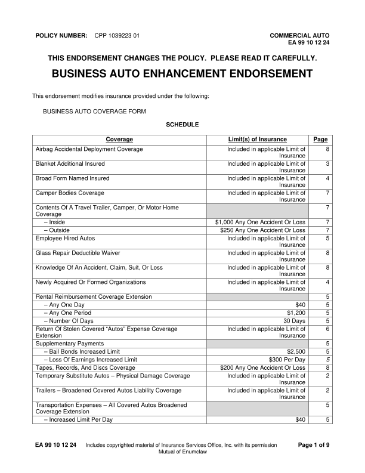
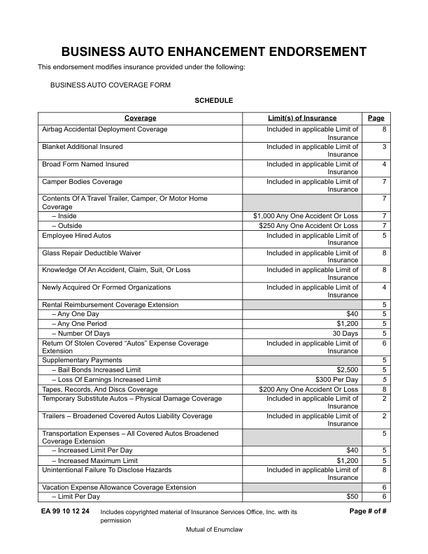
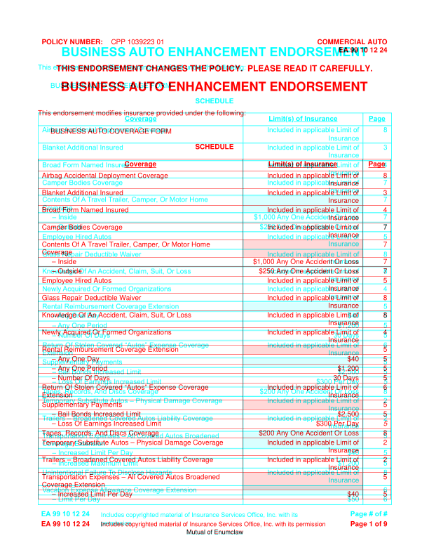
moved BUSINESS (+0.9, -60.5)pt moved AUTO (+0.2, -60.5)pt moved ENHANCEMENT (-0.1, -60.5)pt moved ENDORSEMENT (-0.1, -60.5)pt moved This (+0.0, -77.3)pt moved endorsement (-0.0, -77.3)pt moved modifies (-0.0, -77.3)pt moved insurance (-0.0, -77.3)pt moved provided (-0.0, -77.3)pt moved under (-0.0, -77.3)pt moved the (-0.0, -77.3)pt moved following: (-0.0, -77.3)pt moved BUSINESS (+0.0, -77.0)pt moved AUTO (-0.6, -77.0)pt moved COVERAGE (-0.8, -77.0)pt moved FORM (-0.8, -77.0)pt moved SCHEDULE (+0.1, -77.3)pt moved Coverage (+0.4, -77.0)pt moved Limit(s) (+0.4, -77.0)pt moved of (+0.4, -77.0)pt moved Insurance (+0.4, -77.0)pt moved Page (+0.4, -77.0)pt moved Airbag (+0.5, -76.3)pt moved Accidental (-0.1, -76.3)pt moved Deployment (-0.1, -76.3)pt moved Coverage (-0.1, -76.3)pt moved Included (+0.3, -76.3)pt moved in (+0.3, -76.3)pt moved applicable (+0.3, -76.3)pt moved Limit (+0.3, -76.3)pt moved of (+0.3, -76.3)pt moved 8 (+0.3, -76.3)pt moved Insurance (+0.3, -76.8)pt moved Blanket (+0.5, -76.0)pt moved Additional (-0.1, -76.0)pt moved Insured (-0.1, -76.0)pt moved Included (+0.3, -76.0)pt moved in (+0.3, -76.0)pt moved applicable (+0.3, -76.0)pt moved Limit (+0.3, -76.0)pt moved of (+0.3, -76.0)pt moved 3 (+0.3, -76.0)pt moved Insurance (+0.3, -76.5)pt moved Broad (+0.5, -75.8)pt moved Form (+0.5, -75.8)pt moved Named (+0.5, -75.8)pt moved Insured (+0.5, -75.8)pt moved Included (+0.3, -75.8)pt moved in (+0.3, -75.8)pt moved applicable (+0.3, -75.8)pt moved Limit (+0.3, -75.8)pt moved of (+0.3, -75.8)pt moved 4 (+0.3, -75.8)pt moved Insurance (+0.3, -76.3)pt moved Camper (+0.5, -75.5)pt moved Bodies (+0.5, -75.5)pt moved Coverage (+0.5, -75.5)pt moved Included (+0.3, -75.5)pt moved in (+0.3, -75.5)pt moved applicable (+0.3, -75.5)pt moved Limit (+0.3, -75.5)pt moved of (+0.3, -75.5)pt moved 7 (+0.3, -75.5)pt moved Insurance (+0.3, -76.0)pt moved Contents (+0.5, -75.3)pt moved Of (+0.5, -75.3)pt moved A (-0.1, -75.3)pt moved Travel (-0.8, -75.3)pt moved Trailer, (-1.4, -75.3)pt moved Camper, (-2.3, -75.3)pt moved Or (-2.9, -75.3)pt moved Motor (-2.9, -75.3)pt moved Home (-2.9, -75.3)pt moved 7 (+0.3, -75.3)pt moved Coverage (+0.5, -75.8)pt moved – (+0.5, -75.0)pt moved Inside (+0.5, -75.0)pt moved $1,000 (+1.4, -75.0)pt moved Any (+0.8, -75.0)pt moved One (+0.8, -75.0)pt moved Accident (+0.3, -75.0)pt moved Or (+0.3, -75.0)pt moved Loss (+0.3, -75.0)pt moved 7 (+0.3, -75.0)pt moved – (+0.5, -75.0)pt moved Outside (+0.5, -75.0)pt moved $250 (+1.4, -75.0)pt moved Any (+0.9, -75.0)pt moved One (+0.9, -75.0)pt moved Accident (+0.3, -75.0)pt moved Or (+0.3, -75.0)pt moved Loss (+0.3, -75.0)pt moved 7 (+0.3, -75.0)pt moved Employee (+0.5, -75.0)pt moved Hired (+0.5, -75.0)pt moved Autos (-0.1, -75.0)pt moved Included (+0.3, -75.0)pt moved in (+0.3, -75.0)pt moved applicable (+0.3, -75.0)pt moved Limit (+0.3, -75.0)pt moved of (+0.3, -75.0)pt moved 5 (+0.3, -75.0)pt moved Insurance (+0.3, -74.8)pt moved Glass (+0.5, -74.8)pt moved Repair (+0.5, -74.8)pt moved Deductible (+0.5, -74.8)pt moved Waiver (+0.5, -74.8)pt moved Included (+0.3, -74.8)pt moved in (+0.3, -74.8)pt moved applicable (+0.3, -74.8)pt moved Limit (+0.3, -74.8)pt moved of (+0.3, -74.8)pt moved 8 (+0.3, -74.8)pt moved Insurance (+0.3, -74.5)pt moved Knowledge (+0.5, -74.5)pt moved Of (+0.5, -74.5)pt moved An (-0.1, -74.5)pt moved Accident, (-0.6, -74.5)pt moved Claim, (-0.6, -74.5)pt moved Suit, (-0.6, -74.5)pt moved Or (-0.6, -74.5)pt moved Loss (-0.7, -74.5)pt moved Included (+0.3, -74.5)pt moved in (+0.3, -74.5)pt moved applicable (+0.3, -74.5)pt moved Limit (+0.3, -74.5)pt moved of (+0.3, -74.5)pt moved 8 (+0.3, -74.5)pt moved Insurance (+0.3, -74.3)pt moved Newly (+0.5, -74.3)pt moved Acquired (-0.1, -74.3)pt moved Or (-0.1, -74.3)pt moved Formed (-0.1, -74.3)pt moved Organizations (-0.1, -74.3)pt moved Included (+0.3, -74.3)pt moved in (+0.3, -74.3)pt moved applicable (+0.3, -74.3)pt moved Limit (+0.3, -74.3)pt moved of (+0.3, -74.3)pt moved 4 (+0.3, -74.3)pt moved Insurance (+0.3, -74.0)pt moved Rental (+0.5, -74.0)pt moved Reimbursement (+0.5, -74.0)pt moved Coverage (+0.5, -74.0)pt moved Extension (+0.5, -74.0)pt moved 5 (+0.3, -74.0)pt moved – (+0.5, -73.3)pt moved Any (-0.1, -73.3)pt moved One (-0.1, -73.3)pt moved Day (-0.1, -73.3)pt moved $40 (+0.3, -73.3)pt moved 5 (+0.3, -73.3)pt moved – (+0.5, -73.3)pt moved Any (-0.1, -73.3)pt moved One (-0.1, -73.3)pt moved Period (-0.1, -73.3)pt moved $1,200 (+0.3, -73.3)pt moved 5 (+0.3, -73.3)pt moved – (+0.5, -73.3)pt moved Number (+0.5, -73.3)pt moved Of (+0.5, -73.3)pt moved Days (+0.5, -73.3)pt moved 30 (+0.3, -73.3)pt moved Days (+0.3, -73.3)pt moved 5 (+0.3, -73.3)pt moved Return (+0.5, -72.5)pt moved Of (+0.5, -72.5)pt moved Stolen (+0.5, -72.5)pt moved Covered (+0.5, -72.5)pt moved “Autos” (+0.5, -72.5)pt moved Expense (+0.5, -72.5)pt moved Coverage (+0.5, -72.5)pt moved Included (+0.3, -72.5)pt moved in (+0.3, -72.5)pt moved applicable (+0.3, -72.5)pt moved Limit (+0.3, -72.5)pt moved of (+0.3, -72.5)pt moved 6 (+0.3, -72.5)pt moved Extension (+0.5, -73.0)pt moved Insurance (+0.3, -73.0)pt moved Supplementary (+0.5, -72.3)pt moved Payments (+0.5, -72.3)pt moved 5 (+0.3, -72.3)pt moved – (+0.5, -72.3)pt moved Bail (+0.5, -72.3)pt moved Bonds (+0.5, -72.3)pt moved Increased (+0.5, -72.3)pt moved Limit (+0.5, -72.3)pt moved $2,500 (+0.3, -72.3)pt moved 5 (+0.3, -72.3)pt moved – (+0.5, -72.3)pt moved Loss (+0.5, -72.3)pt moved Of (+0.5, -72.3)pt moved Earnings (+0.5, -72.3)pt moved Increased (+0.5, -72.3)pt moved Limit (+0.5, -72.3)pt moved $300 (+0.3, -72.3)pt moved Per (+0.3, -72.3)pt moved Day (+0.3, -72.3)pt moved 5 (+0.3, -72.3)pt moved Tapes, (+0.5, -71.5)pt moved Records, (-0.6, -71.5)pt moved And (-1.2, -71.5)pt moved Discs (-1.2, -71.5)pt moved Coverage (-1.2, -71.5)pt moved $200 (+1.4, -71.5)pt moved Any (+0.9, -71.5)pt moved One (+0.9, -71.5)pt moved Accident (+0.3, -71.5)pt moved Or (+0.3, -71.5)pt moved Loss (+0.3, -71.5)pt moved 8 (+0.3, -71.5)pt moved Temporary (+0.5, -71.5)pt moved Substitute (-0.6, -71.5)pt moved Autos (-1.2, -71.5)pt moved – (-1.2, -71.5)pt moved Physical (-1.2, -71.5)pt moved Damage (-1.2, -71.5)pt moved Coverage (-1.2, -71.5)pt moved Included (+0.3, -71.5)pt moved in (+0.3, -71.5)pt moved applicable (+0.3, -71.5)pt moved Limit (+0.3, -71.5)pt moved of (+0.3, -71.5)pt moved 2 (+0.3, -71.5)pt moved Insurance (+0.3, -71.3)pt moved Trailers (+0.5, -71.3)pt moved – (+0.1, -71.3)pt moved Broadened (+0.1, -71.3)pt moved Covered (+0.1, -71.3)pt moved Autos (-0.4, -71.3)pt moved Liability (-0.5, -71.3)pt moved Coverage (-0.5, -71.3)pt moved Included (+0.3, -71.3)pt moved in (+0.3, -71.3)pt moved applicable (+0.3, -71.3)pt moved Limit (+0.3, -71.3)pt moved of (+0.3, -71.3)pt moved 2 (+0.3, -71.3)pt moved Insurance (+0.3, -71.0)pt moved Transportation (+0.5, -71.0)pt moved Expenses (+0.1, -71.0)pt moved – (+0.1, -71.0)pt moved All (-0.5, -71.0)pt moved Covered (-0.5, -71.0)pt moved Autos (-1.0, -71.0)pt moved Broadened (-1.0, -71.0)pt moved 5 (+0.3, -71.0)pt moved Coverage (+0.5, -70.8)pt moved Extension (+0.5, -70.8)pt moved – (+0.5, -70.8)pt moved Increased (+0.5, -70.8)pt moved Limit (+0.5, -70.8)pt moved Per (+0.5, -70.8)pt moved Day (+0.5, -70.8)pt moved $40 (+0.3, -70.8)pt moved 5 (+0.3, -70.8)pt moved EA (+0.0, +17.9)pt moved 99 (-0.4, +17.9)pt moved 10 (-0.4, +17.9)pt moved 12 (-0.4, +17.9)pt moved 24 (-0.4, +17.9)pt moved Includes (+0.0, +17.3)pt moved copyrighted (+0.0, +17.3)pt moved material (+0.0, +17.3)pt moved of (+0.0, +17.3)pt moved Insurance (+0.1, +17.3)pt moved Services (+0.1, +17.3)pt moved Office, (+0.1, +17.3)pt moved Inc. (-0.1, +17.3)pt moved with (-0.1, +17.3)pt moved its (-0.1, +17.3)pt moved permission (-0.0, +17.3)pt moved Page (-0.0, +17.9)pt moved of (+0.0, +17.9)pt moved Mutual (+0.1, +17.6)pt moved of (+0.1, +17.6)pt moved Enumclaw (+0.1, +17.6)pt missing h rule at 226.3 (54.5-557.5) missing h rule at 238.5 (177.5-223.1) missing h rule at 238.5 (382.8-481.1) missing h rule at 238.5 (525.6-549.5) missing h rule at 243.8 (54.5-557.5) missing h rule at 268.3 (54.5-557.5) missing h rule at 292.8 (54.5-557.5) missing h rule at 379.8 (54.5-557.5) missing h rule at 442.3 (54.5-557.5) missing h rule at 466.8 (54.5-557.5) missing h rule at 491.0 (346.5-557.5) missing h rule at 504.5 (346.5-557.5) missing h rule at 518.3 (54.5-557.5) missing h rule at 531.8 (54.5-557.5) missing h rule at 545.3 (54.5-557.5) missing h rule at 569.5 (346.5-557.5) missing h rule at 583.0 (346.5-557.5) missing h rule at 596.8 (54.5-557.5) missing h rule at 610.3 (54.5-557.5) missing h rule at 623.8 (54.5-557.5) missing h rule at 648.3 (54.5-557.5) missing h rule at 672.5 (346.5-557.5) missing h rule at 697.0 (346.5-557.5) missing h rule at 710.8 (54.5-557.5) extra h rule at 149.6 (54.0-558.8) extra h rule at 160.9 (177.9-223.5) extra h rule at 160.9 (383.2-481.5) extra h rule at 160.9 (526.0-549.9) extra h rule at 166.9 (54.0-558.8) extra h rule at 191.6 (54.0-558.8) extra h rule at 216.4 (54.0-558.8) extra h rule at 241.1 (54.0-558.8) extra h rule at 265.9 (54.0-558.8) extra h rule at 290.6 (54.0-558.8) extra h rule at 304.9 (54.0-558.8) extra h rule at 343.1 (54.0-558.8) extra h rule at 367.9 (54.0-558.8) extra h rule at 430.9 (54.0-558.8) extra h rule at 445.1 (54.0-558.8) extra h rule at 458.6 (54.0-558.8) extra h rule at 472.1 (54.0-558.8) extra h rule at 496.9 (54.0-558.8) extra h rule at 511.1 (54.0-558.8) extra h rule at 524.6 (54.0-558.8) extra h rule at 538.1 (54.0-558.8) extra h rule at 552.4 (54.0-558.8) extra h rule at 577.1 (54.0-558.8) extra h rule at 601.9 (54.0-558.8) extra h rule at 626.6 (54.0-558.8) extra h rule at 640.1 (54.0-558.8) extra h rule at 653.6 (54.0-558.8) extra h rule at 678.4 (54.0-558.8) extra h rule at 692.6 (54.0-558.8) extra h rule at 706.1 (54.0-558.8) extra h rule at 719.6 (54.0-558.8) extra v rule at 54.4 (149.2-720.0) extra v rule at 346.9 (149.2-720.0) extra v rule at 517.9 (149.2-720.0) extra v rule at 558.4 (149.2-720.0)
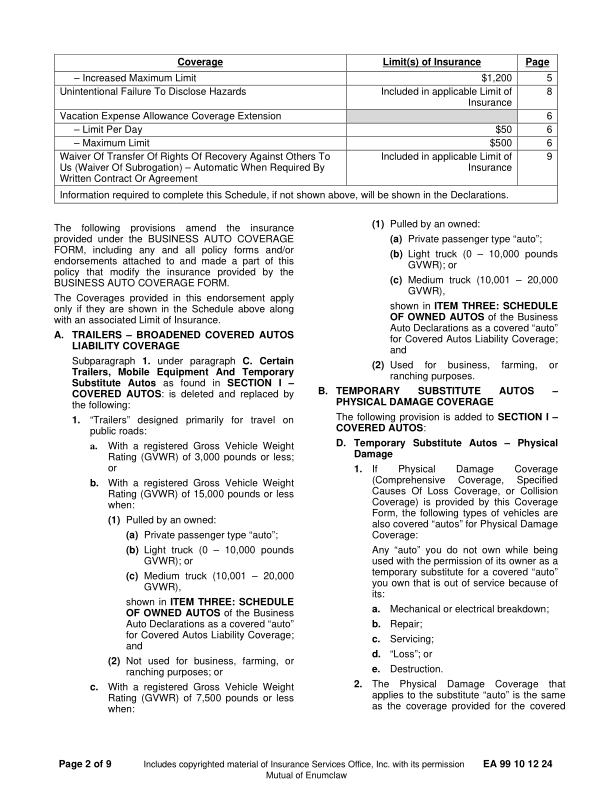
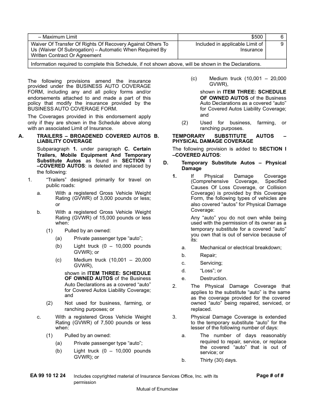
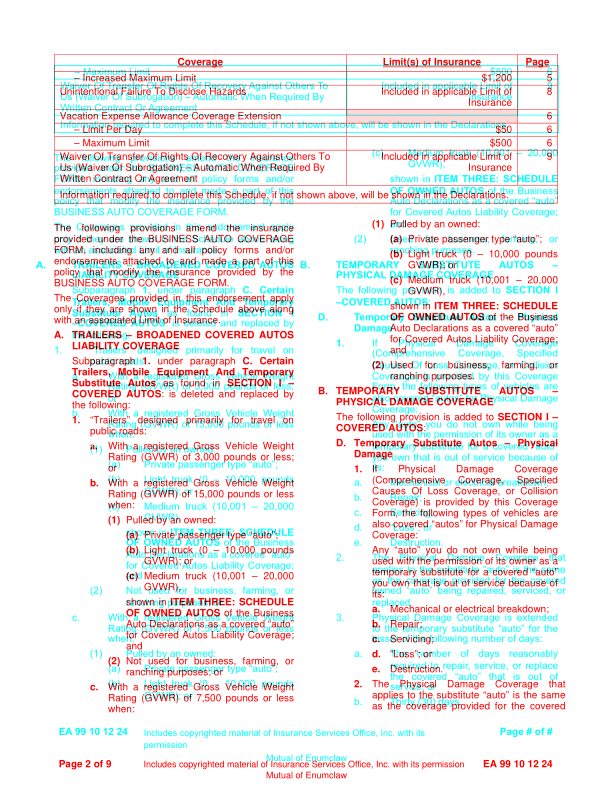
moved Waiver (+0.5, -95.9)pt moved Of (+0.1, -95.9)pt moved Transfer (-0.1, -95.9)pt moved Of (-0.5, -95.9)pt moved Rights (-0.5, -95.9)pt moved Of (-0.5, -95.9)pt moved Recovery (-0.5, -95.9)pt moved Against (-1.0, -95.9)pt moved Others (-1.0, -95.9)pt moved To (-1.2, -95.9)pt moved Included (+0.3, -95.9)pt moved in (+0.3, -95.9)pt moved applicable (+0.3, -95.9)pt moved Limit (+0.3, -95.9)pt moved of (+0.3, -95.9)pt moved 9 (+0.3, -95.9)pt moved Us (+0.5, -95.7)pt moved (Waiver (+0.5, -95.7)pt moved Of (+0.1, -95.7)pt moved Subrogation) (+0.1, -95.7)pt moved – (+0.1, -95.7)pt moved Automatic (-0.5, -95.7)pt moved When (-0.5, -95.7)pt moved Required (-0.5, -95.7)pt moved By (-0.5, -95.7)pt moved Insurance (+0.3, -95.7)pt moved Written (+0.5, -96.2)pt moved Contract (+0.3, -96.2)pt moved Or (+0.3, -96.2)pt moved Agreement (-0.3, -96.2)pt moved Information (+0.5, -95.4)pt moved required (+0.5, -95.4)pt moved to (+0.5, -95.4)pt moved complete (+0.5, -95.4)pt moved this (+0.5, -95.4)pt moved Schedule, (+0.5, -95.4)pt moved if (+0.5, -95.4)pt moved not (+0.5, -95.4)pt moved shown (+0.4, -95.4)pt moved above, (+0.4, -95.4)pt moved will (+0.4, -95.4)pt moved be (+0.4, -95.4)pt moved shown (+0.4, -95.4)pt moved in (+0.4, -95.4)pt moved the (+0.4, -95.4)pt moved Declarations. (+0.4, -95.4)pt moved The (+0.0, -96.2)pt moved following (+0.0, -96.2)pt moved provisions (+0.0, -96.2)pt moved amend (+0.1, -96.2)pt moved the (+0.0, -96.2)pt moved insurance (+0.1, -96.2)pt moved provided (+0.0, -95.9)pt moved under (+0.2, -95.9)pt moved the (+0.4, -95.9)pt moved BUSINESS (+0.5, -95.9)pt moved AUTO (+0.1, -95.9)pt moved COVERAGE (+0.0, -95.9)pt moved FORM, (+0.0, -95.7)pt moved including (+0.0, -95.7)pt moved any (+0.1, -95.7)pt moved and (+0.1, -95.7)pt moved all (+0.0, -95.7)pt moved policy (+0.1, -95.7)pt moved forms (+0.1, -95.7)pt moved and/or (+0.1, -95.7)pt moved endorsements (+0.0, -96.2)pt moved attached (+0.1, -96.2)pt moved to (+0.0, -96.2)pt moved and (+0.0, -96.2)pt moved made (+0.0, -96.2)pt moved a (+0.0, -96.2)pt moved part (+0.1, -96.2)pt moved of (+0.0, -96.2)pt moved this (+0.0, -96.2)pt moved policy (+0.0, -95.9)pt moved that (+0.0, -95.9)pt moved modify (+0.0, -95.9)pt moved the (+0.1, -95.9)pt moved insurance (+0.1, -95.9)pt moved provided (-0.0, -95.9)pt moved by (+0.0, -95.9)pt moved the (+0.1, -95.9)pt moved BUSINESS (+0.0, -95.7)pt moved AUTO (-0.5, -95.7)pt moved COVERAGE (-0.7, -95.7)pt moved FORM. (-0.7, -95.7)pt moved The (+0.0, -95.7)pt moved Coverages (+0.0, -95.7)pt moved provided (+0.0, -95.7)pt moved in (+0.1, -95.7)pt moved this (+0.0, -95.7)pt moved endorsement (+0.1, -95.7)pt moved apply (+0.1, -95.7)pt moved only (+0.0, -96.2)pt moved if (+0.0, -96.2)pt moved they (+0.0, -96.2)pt moved are (+0.0, -96.2)pt moved shown (+0.1, -96.2)pt moved in (+0.0, -96.2)pt moved the (+0.1, -96.2)pt moved Schedule (+0.1, -96.2)pt moved above (+0.0, -96.2)pt moved along (+0.0, -96.2)pt moved AUTOS (+49.6, -104.2)pt moved with (+0.0, -95.9)pt moved an (-0.0, -95.9)pt moved associated (-0.0, -95.9)pt moved Limit (-0.0, -95.9)pt moved of (-0.0, -95.9)pt moved Insurance. (-0.0, -95.9)pt moved A. (-18.0, -95.9)pt moved TRAILERS (+0.0, -95.9)pt moved – (+0.2, -95.9)pt moved BROADENED (+0.3, -95.9)pt moved COVERED (+0.5, -95.9)pt moved AUTOS (+0.2, -95.9)pt moved The (+0.0, -177.9)pt moved following (+1.4, -177.9)pt moved provision (+2.7, -177.9)pt moved is (+4.1, -177.9)pt moved added (+5.3, -177.9)pt moved to (+6.7, -177.9)pt moved SECTION (+8.0, -177.9)pt moved I (+9.3, -177.9)pt moved – (-48.1, -151.7)pt moved 1. (-18.0, -96.2)pt moved “Trailers” (+0.0, -96.2)pt moved designed (-0.2, -96.2)pt moved primarily (-0.2, -96.2)pt moved for (-0.1, -96.2)pt moved travel (-0.0, -96.2)pt moved on (+0.1, -96.2)pt moved public (+0.0, -95.9)pt moved roads: (-0.0, -95.9)pt moved Physical (-37.3, -96.7)pt moved a. (-18.0, -95.9)pt moved With (+0.0, -95.9)pt moved a (+0.2, -95.9)pt moved registered (+0.3, -95.9)pt moved Gross (+0.5, -95.9)pt moved Vehicle (+0.6, -95.9)pt moved Weight (+0.3, -95.9)pt moved Rating (+0.0, -95.7)pt moved (GVWR) (+0.1, -95.7)pt moved of (+0.1, -95.7)pt moved 3,000 (+0.1, -95.7)pt moved pounds (+0.0, -95.7)pt moved or (+0.1, -95.7)pt moved less; (+0.0, -95.7)pt moved or (+0.0, -96.2)pt moved Any (+0.0, -178.2)pt moved “auto” (+0.1, -178.2)pt moved you (+0.0, -178.2)pt moved do (+0.1, -178.2)pt moved not (+0.0, -178.2)pt moved own (+0.0, -178.2)pt moved while (+0.0, -178.2)pt moved being (+0.0, -178.2)pt moved used (+0.0, -177.9)pt moved with (+0.0, -177.9)pt moved the (+0.0, -177.9)pt moved permission (+0.0, -177.9)pt moved of (+0.0, -177.9)pt moved its (+0.1, -177.9)pt moved owner (+0.1, -177.9)pt moved as (+0.0, -177.9)pt moved a (+0.0, -177.9)pt moved temporary (+0.0, -177.7)pt moved substitute (+0.1, -177.7)pt moved for (+0.0, -177.7)pt moved a (+0.0, -177.7)pt moved covered (+0.1, -177.7)pt moved “auto” (+0.1, -177.7)pt moved you (+0.0, -178.2)pt moved own (+0.1, -178.2)pt moved that (+0.1, -178.2)pt moved is (+0.1, -178.2)pt moved out (+0.1, -178.2)pt moved of (+0.0, -178.2)pt moved service (+0.1, -178.2)pt moved because (+0.0, -178.2)pt moved of (+0.1, -178.2)pt moved GVWR), (+0.0, -95.9)pt moved shown (+0.0, -95.9)pt moved in (+0.0, -95.9)pt moved ITEM (+0.1, -95.9)pt moved THREE: (+0.1, -95.9)pt moved SCHEDULE (+0.1, -95.9)pt moved OF (+0.0, -95.7)pt moved OWNED (+0.2, -95.7)pt moved AUTOS (-0.2, -95.7)pt moved of (-0.1, -95.7)pt moved the (-0.1, -95.7)pt moved Business (+0.0, -95.7)pt moved applies (+0.0, -177.7)pt moved to (+0.1, -177.7)pt moved the (+0.1, -177.7)pt moved substitute (+0.1, -177.7)pt moved “auto” (+0.1, -177.7)pt moved is (+0.1, -177.7)pt moved the (+0.1, -177.7)pt moved same (+0.0, -177.7)pt moved Rating (+0.0, -95.9)pt moved (GVWR) (+0.0, -95.9)pt moved of (-0.0, -95.9)pt moved 7,500 (+0.1, -95.9)pt moved pounds (+0.1, -95.9)pt moved or (+0.0, -95.9)pt moved less (+0.0, -95.9)pt moved the (-121.2, -82.2)pt moved covered (-118.3, -82.2)pt moved of (+455.9, -140.4)pt size 1. 10.0 -> 10.0pt size Physical 10.0 -> 10.0pt size a. 10.0 -> 10.0pt size of 10.0 -> 10.0pt missing h rule at 66.9 (177.5-223.1) missing h rule at 66.9 (382.8-481.1) missing h rule at 66.9 (525.6-549.5) missing h rule at 71.7 (54.5-557.5) missing h rule at 85.2 (54.5-557.5) missing h rule at 122.9 (346.5-557.5) missing h rule at 136.7 (54.5-557.5) missing h rule at 150.2 (54.5-557.5) missing h rule at 185.7 (54.5-557.5) missing h rule at 203.2 (54.5-557.5) missing v rule at 54.2 (54.5-203.0) missing v rule at 346.5 (54.5-185.4) missing v rule at 517.5 (54.5-185.4) missing v rule at 557.7 (54.5-203.0) extra h rule at 89.6 (54.0-558.8) extra h rule at 107.6 (54.0-558.8)
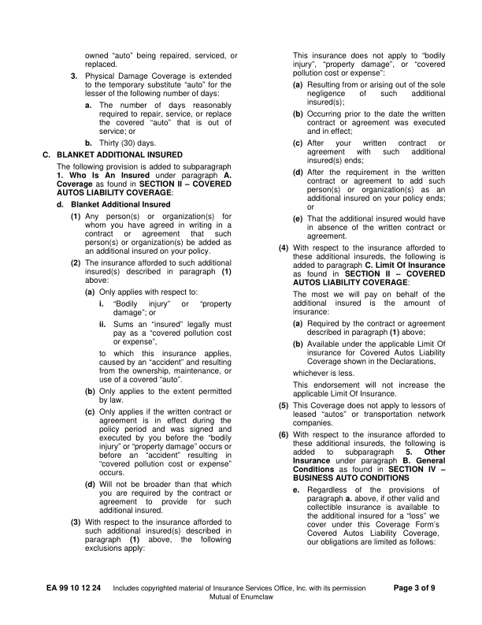
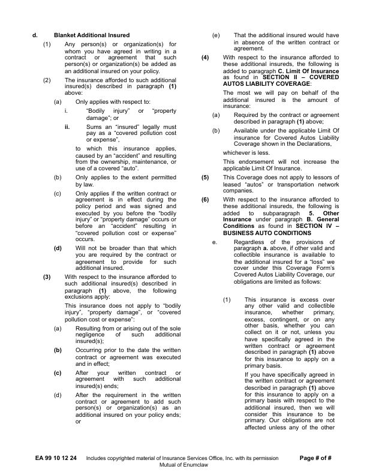
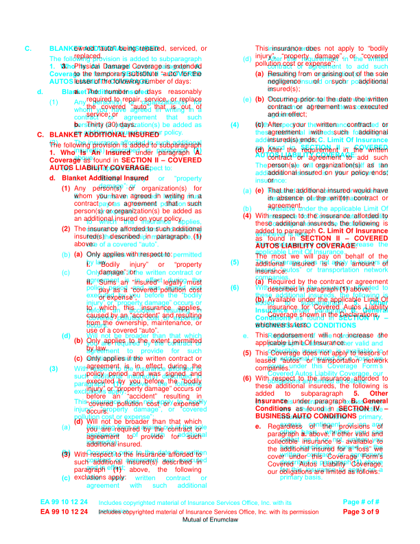
moved d. (-18.0, -200.4)pt moved Blanket (+0.0, -200.4)pt moved Additional (-0.4, -200.4)pt moved Insured (-0.4, -200.4)pt moved or (+166.6, -192.2)pt moved (1) (-18.0, -200.4)pt moved Any (+0.0, -200.4)pt moved person(s) (+0.1, -200.4)pt moved or (+0.1, -200.4)pt moved organization(s) (+0.0, -200.4)pt moved for (+0.0, -200.4)pt moved whom (+0.0, -200.2)pt moved you (+0.0, -200.2)pt moved have (+0.0, -200.2)pt moved agreed (+0.1, -200.2)pt moved in (+0.1, -200.2)pt moved writing (+0.0, -200.2)pt moved in (+0.1, -200.2)pt moved a (+0.0, -200.2)pt moved contract (+0.0, -200.7)pt moved or (+0.1, -200.7)pt moved agreement (+0.0, -200.7)pt moved that (+0.0, -200.7)pt moved such (+0.1, -200.7)pt moved (4) (-18.0, -218.7)pt moved With (+0.0, -218.7)pt moved respect (+0.0, -218.7)pt moved to (+0.1, -218.7)pt moved the (+0.2, -218.7)pt moved insurance (+0.2, -218.7)pt moved afforded (+0.2, -218.7)pt moved to (+0.1, -218.7)pt moved an (+0.0, -200.2)pt moved additional (-0.0, -200.2)pt moved insured (-0.0, -200.2)pt moved on (-0.0, -200.2)pt moved your (-0.0, -200.2)pt moved policy. (-0.0, -200.2)pt moved (2) (-18.0, -200.2)pt moved The (+0.0, -200.2)pt moved insurance (+0.1, -200.2)pt moved afforded (+0.1, -200.2)pt moved to (-0.0, -200.2)pt moved such (+0.0, -200.2)pt moved additional (+0.1, -200.2)pt moved insured(s) (+0.0, -200.7)pt moved described (+0.0, -200.7)pt moved in (+0.0, -200.7)pt moved paragraph (+0.0, -200.7)pt moved (1) (+0.1, -200.7)pt moved above: (+0.0, -200.4)pt moved The (+0.0, -218.4)pt moved most (+0.0, -218.4)pt moved we (+0.1, -218.4)pt moved will (+0.1, -218.4)pt moved pay (+0.1, -218.4)pt moved on (+0.1, -218.4)pt moved behalf (+0.0, -218.4)pt moved of (+0.1, -218.4)pt moved the (+0.1, -218.4)pt moved additional (+0.0, -218.2)pt moved insured (+0.0, -218.2)pt moved is (+0.0, -218.2)pt moved the (+0.1, -218.2)pt moved amount (+0.1, -218.2)pt moved of (+0.1, -218.2)pt moved i. (-18.0, -200.4)pt moved “Bodily (+0.0, -200.4)pt moved injury” (+0.1, -200.4)pt moved or (+0.1, -200.4)pt moved “property (+0.1, -200.4)pt moved (a) (-18.0, -218.7)pt moved Required (+0.0, -218.7)pt moved by (+0.0, -218.7)pt moved the (+0.0, -218.7)pt moved contract (+0.1, -218.7)pt moved or (+0.1, -218.7)pt moved agreement (+0.1, -218.7)pt moved described (+0.0, -218.4)pt moved in (-0.0, -218.4)pt moved paragraph (-0.0, -218.4)pt moved (1) (+0.0, -218.4)pt moved above; (+0.1, -218.4)pt moved (b) (-18.0, -218.4)pt moved Available (+0.0, -218.4)pt moved under (-0.1, -218.4)pt moved the (-0.1, -218.4)pt moved applicable (-0.1, -218.4)pt moved Limit (+0.0, -218.4)pt moved Of (+0.0, -218.4)pt moved insurance (+0.0, -218.2)pt moved for (+0.2, -218.2)pt moved Covered (+0.3, -218.2)pt moved Autos (-0.1, -218.2)pt moved Liability (+0.1, -218.2)pt moved to (+0.0, -200.4)pt moved which (+0.0, -200.4)pt moved this (+0.1, -200.4)pt moved insurance (+0.1, -200.4)pt moved applies, (+0.0, -200.4)pt moved caused (+0.0, -200.2)pt moved by (+0.1, -200.2)pt moved an (+0.1, -200.2)pt moved “accident” (+0.0, -200.2)pt moved and (+0.1, -200.2)pt moved resulting (+0.0, -200.2)pt moved from (+0.0, -200.7)pt moved the (+0.0, -200.7)pt moved ownership, (+0.0, -200.7)pt moved maintenance, (+0.1, -200.7)pt moved or (+0.0, -200.7)pt moved This (+0.0, -218.7)pt moved endorsement (+0.0, -218.7)pt moved will (+0.1, -218.7)pt moved not (+0.1, -218.7)pt moved increase (+0.1, -218.7)pt moved the (+0.1, -218.7)pt moved (b) (-18.0, -200.4)pt moved Only (+0.0, -200.4)pt moved applies (+0.1, -200.4)pt moved to (+0.1, -200.4)pt moved the (+0.0, -200.4)pt moved extent (+0.1, -200.4)pt moved permitted (+0.0, -200.4)pt moved (5) (-18.0, -218.4)pt moved This (+0.0, -218.4)pt moved Coverage (+0.0, -218.4)pt moved does (+0.0, -218.4)pt moved not (+0.1, -218.4)pt moved apply (+0.0, -218.4)pt moved to (+0.1, -218.4)pt moved lessors (+0.0, -218.4)pt moved of (+0.1, -218.4)pt moved (c) (-18.0, -200.2)pt moved Only (+0.0, -200.2)pt moved applies (+0.1, -200.2)pt moved if (+0.1, -200.2)pt moved the (+0.0, -200.2)pt moved written (+0.0, -200.2)pt moved contract (+0.0, -200.2)pt moved or (+0.0, -200.2)pt moved agreement (+0.0, -200.7)pt moved is (+0.0, -200.7)pt moved in (+0.1, -200.7)pt moved effect (+0.1, -200.7)pt moved during (+0.1, -200.7)pt moved the (+0.1, -200.7)pt moved (6) (-18.0, -218.7)pt moved With (+0.0, -218.7)pt moved respect (+0.0, -218.7)pt moved to (+0.1, -218.7)pt moved the (+0.2, -218.7)pt moved insurance (+0.2, -218.7)pt moved afforded (+0.2, -218.7)pt moved to (+0.1, -218.7)pt moved executed (+0.0, -200.2)pt moved by (+0.1, -200.2)pt moved you (+0.1, -200.2)pt moved before (+0.1, -200.2)pt moved the (+0.0, -200.2)pt moved “bodily (+0.0, -200.2)pt moved injury” (+0.0, -200.7)pt moved or (+0.0, -200.7)pt moved “property (+0.0, -200.7)pt moved damage” (+0.1, -200.7)pt moved occurs (+0.0, -200.7)pt moved or (+0.0, -200.7)pt moved before (+0.0, -200.4)pt moved an (+0.0, -200.4)pt moved “accident” (+0.1, -200.4)pt moved resulting (+0.1, -200.4)pt moved in (+0.0, -200.4)pt moved Conditions (+0.0, -218.4)pt moved as (+0.0, -218.4)pt moved found (+0.1, -218.4)pt moved in (+0.0, -218.4)pt moved SECTION (+0.0, -218.4)pt moved IV (+0.1, -218.4)pt moved – (+0.0, -218.4)pt moved BUSINESS (+0.0, -218.2)pt moved AUTO (-0.4, -218.2)pt moved CONDITIONS (-0.6, -218.2)pt moved (d) (-18.0, -200.7)pt moved Will (+0.0, -200.7)pt moved not (+0.0, -200.7)pt moved be (+0.0, -200.7)pt moved broader (+0.1, -200.7)pt moved than (+0.1, -200.7)pt moved that (+0.0, -200.7)pt moved which (+0.0, -200.7)pt moved you (+0.0, -200.4)pt moved are (+0.0, -200.4)pt moved required (+0.1, -200.4)pt moved by (+0.1, -200.4)pt moved the (+0.0, -200.4)pt moved contract (+0.0, -200.4)pt moved or (+0.0, -200.4)pt moved agreement (+0.0, -200.2)pt moved to (+0.1, -200.2)pt moved provide (+0.1, -200.2)pt moved for (+0.0, -200.2)pt moved such (+0.1, -200.2)pt moved the (+0.0, -218.2)pt moved additional (+0.0, -218.2)pt moved insured (+0.0, -218.2)pt moved for (+0.0, -218.2)pt moved a (-0.0, -218.2)pt moved “loss” (+0.1, -218.2)pt moved we (+0.0, -218.2)pt moved (3) (-18.0, -200.7)pt moved With (+0.0, -200.7)pt moved respect (+0.1, -200.7)pt moved to (+0.1, -200.7)pt moved the (+0.1, -200.7)pt moved insurance (+0.2, -200.7)pt moved afforded (+0.1, -200.7)pt moved to (+0.1, -200.7)pt moved such (+0.0, -200.4)pt moved additional (+0.0, -200.4)pt moved insured(s) (+0.1, -200.4)pt moved described (+0.0, -200.4)pt moved in (+0.0, -200.4)pt moved paragraph (+0.0, -200.2)pt moved (1) (+0.0, -200.2)pt moved above, (+0.1, -200.2)pt moved the (+0.1, -200.2)pt moved following (+0.1, -200.2)pt moved obligations (+63.7, +13.6)pt moved are (+66.4, +13.6)pt moved EA (+0.0, +17.9)pt moved 99 (-0.4, +17.9)pt moved 10 (-0.4, +17.9)pt moved 12 (-0.4, +17.9)pt moved 24 (-0.4, +17.9)pt moved Includes (+0.0, +17.3)pt moved copyrighted (+0.0, +17.3)pt moved material (+0.0, +17.3)pt moved of (+0.0, +17.3)pt moved Insurance (+0.1, +17.3)pt moved Services (+0.1, +17.3)pt moved Office, (+0.1, +17.3)pt moved Inc. (-0.1, +17.3)pt moved with (-0.1, +17.3)pt moved its (-0.1, +17.3)pt moved permission (-0.0, +17.3)pt moved Page (-0.0, +17.9)pt moved of (+0.0, +17.9)pt moved Mutual (+0.1, +17.6)pt moved of (+0.1, +17.6)pt moved Enumclaw (+0.1, +17.6)pt size (1) 10.0 -> 10.0pt size (2) 10.0 -> 10.0pt size i. 10.0 -> 10.0pt size (a) 10.0 -> 10.0pt size (b) 10.0 -> 10.0pt size (b) 10.0 -> 10.0pt size (c) 10.0 -> 10.0pt
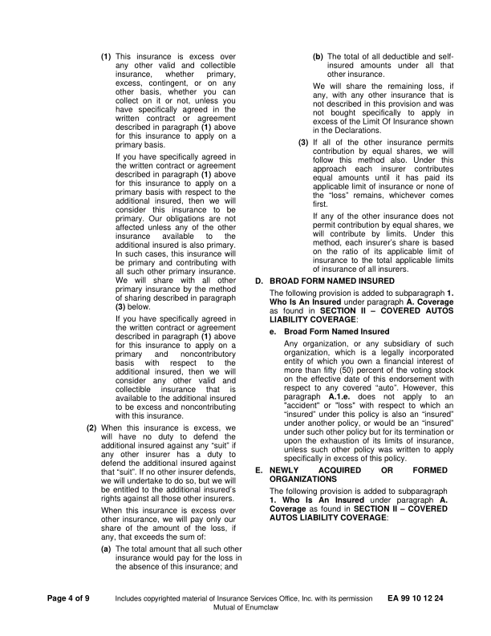
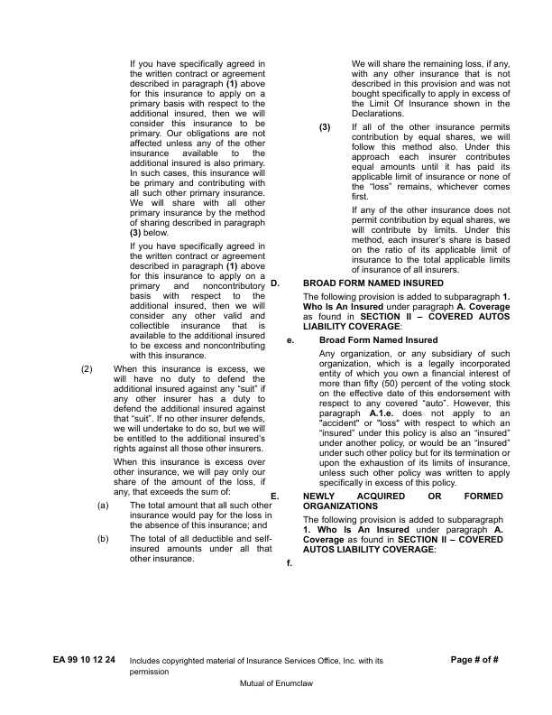
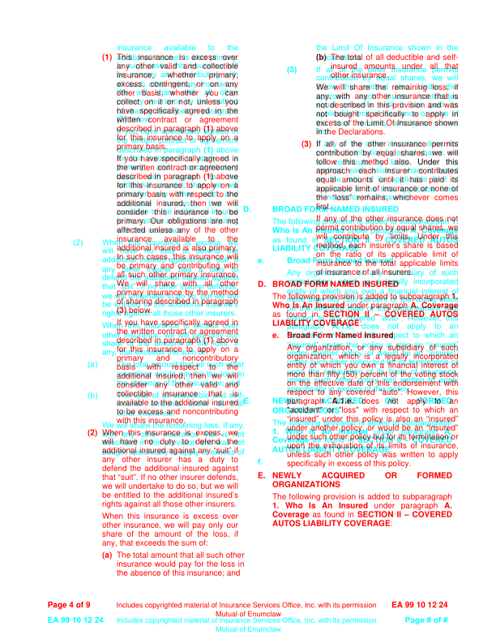
moved insurance (-26.3, -11.4)pt moved the (-182.9, -48.4)pt moved the (-45.3, -92.4)pt moved Limit (-42.3, -92.4)pt moved Of (-39.4, -92.4)pt moved Insurance (-36.4, -92.4)pt moved shown (-33.4, -92.4)pt moved in (+147.9, -103.4)pt moved the (+151.0, -103.4)pt moved Declarations. (-27.2, -92.2)pt moved this (+53.0, -88.7)pt moved insurance (+51.7, -88.7)pt moved (3) (-18.0, -92.2)pt moved If (+0.0, -92.2)pt moved all (+0.0, -92.2)pt moved of (+0.1, -92.2)pt moved the (+0.1, -92.2)pt moved other (+0.1, -92.2)pt moved insurance (+0.1, -92.2)pt moved permits (+0.0, -92.2)pt moved primary (+16.0, -88.4)pt moved contribution (+0.0, -92.7)pt moved by (+0.1, -92.7)pt moved equal (+0.1, -92.7)pt moved shares, (+0.0, -92.7)pt moved we (+0.1, -92.7)pt moved will (+0.0, -92.7)pt moved follow (+0.0, -92.4)pt moved this (+0.1, -92.4)pt moved method (+0.1, -92.4)pt moved also. (+0.0, -92.4)pt moved Under (+0.1, -92.4)pt moved this (+0.0, -92.4)pt moved approach (+0.0, -92.2)pt moved each (+0.1, -92.2)pt moved insurer (+0.0, -92.2)pt moved contributes (+0.1, -92.2)pt moved equal (+0.0, -92.7)pt moved amounts (+0.1, -92.7)pt moved until (+0.1, -92.7)pt moved it (+0.0, -92.7)pt moved has (+0.0, -92.7)pt moved paid (+0.0, -92.7)pt moved its (-0.0, -92.7)pt moved applicable (+0.0, -92.4)pt moved limit (+0.0, -92.4)pt moved of (+0.1, -92.4)pt moved insurance (+0.0, -92.4)pt moved or (+0.0, -92.4)pt moved none (+0.0, -92.4)pt moved of (+0.1, -92.4)pt moved the (+0.0, -92.2)pt moved “loss” (+0.1, -92.2)pt moved remains, (+0.0, -92.2)pt moved whichever (+0.0, -92.2)pt moved comes (+0.0, -92.2)pt moved first. (+0.0, -92.7)pt moved If (+0.0, -92.7)pt moved any (+0.0, -92.7)pt moved of (+0.0, -92.7)pt moved the (+0.0, -92.7)pt moved other (+0.1, -92.7)pt moved insurance (+0.0, -92.7)pt moved does (+0.1, -92.7)pt moved not (+0.1, -92.7)pt moved permit (+0.0, -92.4)pt moved contribution (+0.1, -92.4)pt moved by (+0.0, -92.4)pt moved equal (+0.1, -92.4)pt moved shares, (+0.0, -92.4)pt moved we (+0.0, -92.4)pt moved will (+0.0, -92.2)pt moved contribute (+0.0, -92.2)pt moved by (+0.0, -92.2)pt moved limits. (+0.0, -92.2)pt moved Under (+0.0, -92.2)pt moved this (+0.0, -92.2)pt moved method, (+0.0, -92.7)pt moved each (-0.0, -92.7)pt moved insurer’s (+0.0, -92.7)pt moved share (+0.1, -92.7)pt moved is (+0.1, -92.7)pt moved based (+0.1, -92.7)pt moved on (+0.0, -92.4)pt moved the (+0.1, -92.4)pt moved ratio (+0.1, -92.4)pt moved of (+0.1, -92.4)pt moved its (+0.1, -92.4)pt moved applicable (+0.1, -92.4)pt moved limit (+0.1, -92.4)pt moved of (+0.1, -92.4)pt moved will (+0.0, -88.7)pt moved insurance (+0.0, -92.2)pt moved to (+0.1, -92.2)pt moved the (+0.1, -92.2)pt moved total (+0.0, -92.2)pt moved applicable (+0.1, -92.2)pt moved limits (+0.0, -92.2)pt moved and (+79.2, -88.4)pt moved of (+0.0, -92.7)pt moved insurance (-0.0, -92.7)pt moved of (-0.0, -92.7)pt moved all (-0.0, -92.7)pt moved insurers. (-0.0, -92.7)pt moved D. (-18.0, -92.7)pt moved BROAD (+0.0, -92.7)pt moved FORM (+0.1, -92.7)pt moved NAMED (+0.1, -92.7)pt moved INSURED (-0.0, -92.7)pt moved available (+0.0, -235.7)pt moved to (+0.0, -235.7)pt moved the (+0.1, -235.7)pt moved additional (+0.0, -235.7)pt moved insured (+0.0, -235.7)pt moved to (+0.0, -235.4)pt moved be (+0.0, -235.4)pt moved excess (+0.0, -235.4)pt moved and (+0.0, -235.4)pt moved noncontributing (+0.0, -235.4)pt moved "accident" (+0.0, -92.4)pt moved or (+0.0, -92.4)pt moved "loss" (+0.0, -92.4)pt moved with (+0.0, -92.4)pt moved respect (+0.1, -92.4)pt moved to (+0.1, -92.4)pt moved which (+0.0, -92.4)pt moved an (+0.1, -92.4)pt moved “insured” (+0.0, -92.2)pt moved under (+0.0, -92.2)pt moved this (+0.1, -92.2)pt moved policy (+0.0, -92.2)pt moved is (+0.0, -92.2)pt moved also (+0.0, -92.2)pt moved an (+0.0, -92.2)pt moved “insured” (+0.0, -92.2)pt moved under (+0.0, -92.7)pt moved another (+0.1, -92.7)pt moved policy, (+0.3, -92.7)pt moved or (-0.3, -92.7)pt moved would (-0.3, -92.7)pt moved be (-0.1, -92.7)pt moved an (-0.0, -92.7)pt moved “insured” (+0.0, -92.7)pt moved under (+0.0, -92.4)pt moved such (+0.1, -92.4)pt moved other (+0.0, -92.4)pt moved policy (+0.0, -92.4)pt moved but (+0.0, -92.4)pt moved for (+0.0, -92.4)pt moved its (+0.0, -92.4)pt moved termination (+0.0, -92.4)pt moved or (+0.0, -92.4)pt moved (a) (-18.0, -235.4)pt moved The (+0.0, -235.4)pt moved total (+0.0, -235.4)pt moved amount (+0.0, -235.4)pt moved that (+0.1, -235.4)pt moved all (+0.1, -235.4)pt moved such (+0.1, -235.4)pt moved other (+0.0, -235.4)pt moved insurance (+0.0, -235.2)pt moved would (+0.0, -235.2)pt moved pay (-0.0, -235.2)pt moved for (+0.1, -235.2)pt moved the (+0.0, -235.2)pt moved loss (+0.1, -235.2)pt moved in (+0.0, -235.2)pt moved the (+0.0, -234.9)pt moved absence (-0.0, -234.9)pt moved of (-0.0, -234.9)pt moved this (-0.0, -234.9)pt moved insurance; (-0.0, -234.9)pt moved and (-0.0, -234.9)pt moved of (+355.8, -267.1)pt moved Includes (+0.0, +17.3)pt moved copyrighted (+0.0, +17.3)pt moved material (+0.0, +17.3)pt moved of (+0.0, +17.3)pt moved Insurance (+0.1, +17.3)pt moved Services (+0.1, +17.3)pt moved Office, (+0.1, +17.3)pt moved Inc. (-0.1, +17.3)pt moved with (-0.1, +17.3)pt moved its (-0.1, +17.3)pt moved permission (-0.0, +17.3)pt moved Mutual (+0.1, +17.6)pt moved of (+0.1, +17.6)pt moved Enumclaw (+0.1, +17.6)pt size (a) 10.0 -> 10.0pt size of 10.0 -> 10.0pt
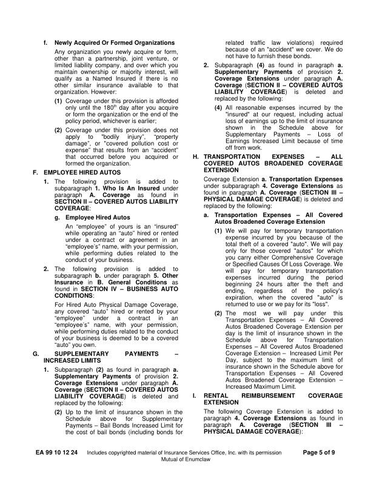
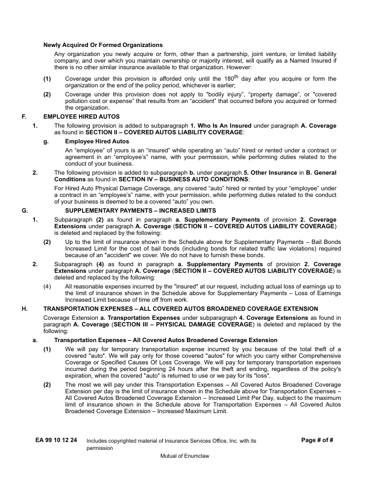
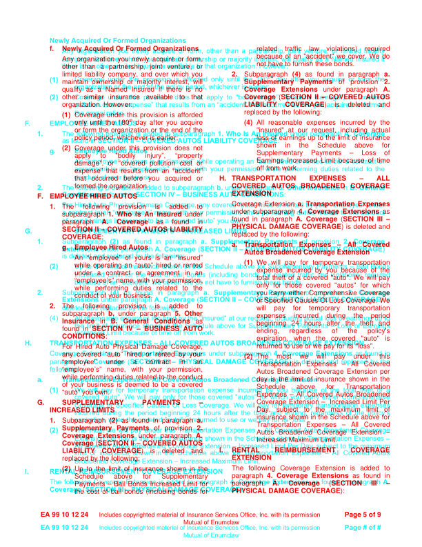
moved Newly (-18.0, -11.4)pt moved Acquired (-18.4, -11.4)pt moved Or (-18.4, -11.4)pt moved Formed (-18.4, -11.4)pt moved Organizations (-18.4, -11.4)pt moved Any (+0.0, -11.4)pt moved organization (+0.2, -11.4)pt moved you (+0.3, -11.4)pt moved newly (+0.4, -11.4)pt moved acquire (+0.5, -11.4)pt moved or (+0.7, -11.4)pt moved form, (+0.8, -11.4)pt moved other (+209.2, -22.4)pt moved than (+207.1, -22.4)pt moved a (+205.0, -22.4)pt moved partnership, (+202.7, -22.4)pt moved joint (+200.6, -22.4)pt moved venture, (+198.3, -22.4)pt moved or (+196.1, -22.4)pt moved limited (+404.6, -33.4)pt moved liability (+405.2, -33.4)pt moved company, (-66.8, -22.2)pt moved and (-68.1, -22.2)pt moved over (-68.6, -22.2)pt moved which (-69.2, -22.2)pt moved you (-69.7, -22.2)pt moved maintain (+137.7, -33.2)pt moved ownership (+135.7, -33.2)pt moved or (+133.8, -33.2)pt moved majority (+131.7, -33.2)pt moved interest, (+129.8, -33.2)pt moved will (+127.7, -33.2)pt moved qualify (+335.1, -44.2)pt moved as (+332.7, -44.2)pt moved a (+330.3, -44.2)pt moved Named (+327.8, -44.2)pt moved Insured (+325.4, -44.2)pt moved if (+322.9, -44.2)pt moved there (-151.0, -33.7)pt moved is (-154.1, -33.7)pt moved no (-157.2, -33.7)pt moved other (+49.5, -44.7)pt moved similar (+43.4, -44.7)pt moved insurance (+37.3, -44.7)pt moved available (+31.1, -44.7)pt moved to (+25.0, -44.7)pt moved that (+18.9, -44.7)pt moved Coverage (-116.0, +220.1)pt moved (SECTION (-117.1, +220.1)pt moved II (-118.3, +220.1)pt moved – (-119.5, +220.1)pt moved COVERED (-120.6, +220.1)pt moved AUTOS (-122.2, +220.1)pt moved LIABILITY (+92.5, +209.1)pt moved COVERAGE) (+84.1, +209.1)pt moved is (-395.5, +219.6)pt moved deleted (-404.3, +219.6)pt moved and (-413.2, +219.6)pt moved replaced (-199.0, +208.6)pt moved by (-199.0, +208.6)pt moved the (-199.0, +208.6)pt moved following: (-199.0, +208.6)pt moved Coverage (+411.9, +257.1)pt moved under (-8.4, +267.6)pt moved is (+311.8, +267.6)pt moved the (+46.7, +267.8)pt moved (4) (-282.0, +282.8)pt moved All (-264.0, +282.8)pt moved reasonable (-267.1, +282.8)pt moved expenses (-270.1, +282.8)pt moved incurred (-273.3, +282.8)pt moved by (-276.4, +282.8)pt moved the (-279.5, +282.8)pt moved "insured" (-83.3, +271.8)pt moved at (-86.2, +271.8)pt moved our (-89.1, +271.8)pt moved request, (-92.0, +271.8)pt moved including (-94.9, +271.8)pt moved actual (-97.9, +271.8)pt moved loss (+98.4, +260.8)pt moved of (+98.0, +260.8)pt moved earnings (+97.5, +260.8)pt moved up (+97.0, +260.8)pt moved to (+96.6, +260.8)pt moved the (-364.3, +272.1)pt moved limit (-363.7, +272.1)pt moved of (-363.3, +272.1)pt moved insurance (-362.7, +272.1)pt moved shown (-165.5, +261.1)pt moved in (-174.1, +261.1)pt moved the (-182.8, +261.1)pt moved Schedule (-191.5, +261.1)pt moved above (-200.2, +261.1)pt moved for (-208.9, +261.1)pt moved Supplementary (-11.6, +250.1)pt moved Payments (-19.5, +250.1)pt moved – (-27.3, +250.1)pt moved Loss (-35.3, +250.1)pt moved of (-43.2, +250.1)pt moved Earnings (+154.0, +239.1)pt moved Increased (-308.2, +249.6)pt moved Limit (-310.2, +249.6)pt moved because (-312.2, +249.6)pt moved of (-314.3, +249.6)pt moved time (-316.3, +249.6)pt moved off (-120.1, +238.6)pt moved from (-120.3, +238.6)pt moved work. (-120.3, +238.6)pt moved TRANSPORTATION (-264.0, +238.6)pt moved EXPENSES (-281.8, +238.6)pt moved – (-298.1, +238.6)pt moved ALL (-314.8, +238.6)pt moved COVERED (-82.7, +227.6)pt moved AUTOS (-88.1, +227.6)pt moved BROADENED (-93.3, +227.6)pt moved COVERAGE (-98.3, +227.6)pt moved EXTENSION (+133.9, +216.6)pt moved Coverage (-264.0, +216.6)pt moved Extension (-264.5, +216.6)pt moved a. (-265.0, +216.6)pt moved Transportation (-265.6, +216.6)pt moved Expenses (-266.8, +216.6)pt moved under (-33.7, +205.6)pt moved subparagraph (-34.9, +205.6)pt moved 4. (-36.2, +205.6)pt moved Coverage (-37.4, +205.6)pt moved Extensions (-38.7, +205.6)pt moved as (-40.0, +205.6)pt moved found (+193.1, +194.6)pt moved in (+191.9, +194.6)pt moved paragraph (-306.4, +205.8)pt moved A. (-307.3, +205.8)pt moved Coverage (-308.1, +205.8)pt moved III (-309.8, +205.8)pt moved – (-310.7, +205.8)pt moved PHYSICAL (-77.3, +194.8)pt moved DAMAGE (-76.9, +194.8)pt moved COVERAGE) (-76.3, +194.8)pt moved is (-75.7, +194.8)pt moved deleted (-75.2, +194.8)pt moved and (-74.7, +194.8)pt moved replaced (+158.7, +183.8)pt moved by (+159.9, +183.8)pt moved the (+161.1, +183.8)pt moved following: (-335.1, +195.1)pt moved a. (-282.0, +195.1)pt moved Transportation (-264.0, +195.1)pt moved Expenses (-270.7, +195.1)pt moved – (-276.9, +195.1)pt moved All (-283.5, +195.1)pt moved Covered (-289.7, +195.1)pt moved Autos (-75.8, +184.1)pt moved Broadened (-75.9, +184.1)pt moved Coverage (-75.9, +184.1)pt moved Extension (-75.9, +184.1)pt moved (1) (-282.0, +184.1)pt moved We (-264.0, +184.1)pt moved will (-265.2, +184.1)pt moved pay (-266.2, +184.1)pt moved for (-267.2, +184.1)pt moved temporary (-268.2, +184.1)pt moved transportation (-269.2, +184.1)pt moved expense (-70.6, +173.1)pt moved incurred (-70.9, +173.1)pt moved by (-71.3, +173.1)pt moved you (-71.7, +173.1)pt moved because (-72.0, +173.1)pt moved of (-72.3, +173.1)pt moved the (-72.6, +173.1)pt moved total (+125.9, +162.1)pt moved theft (+127.1, +162.1)pt moved of (+128.4, +162.1)pt moved a (+129.5, +162.1)pt moved covered (-331.9, +172.6)pt moved "auto". (-332.1, +172.6)pt moved We (-332.3, +172.6)pt moved will (-332.7, +172.6)pt moved pay (-332.9, +172.6)pt moved only (-135.7, +161.6)pt moved for (-137.8, +161.6)pt moved those (-139.8, +161.6)pt moved covered (-142.0, +161.6)pt moved "autos" (-144.0, +161.6)pt moved for (-146.0, +161.6)pt moved which (-148.2, +161.6)pt moved you (+49.0, +150.6)pt moved carry (+48.5, +150.6)pt moved either (+48.1, +150.6)pt moved Comprehensive (+47.6, +150.6)pt moved Coverage (-414.1, +161.8)pt moved or (-217.0, +150.8)pt moved Specified (-216.1, +150.8)pt moved Causes (-215.4, +150.8)pt moved Of (-214.6, +150.8)pt moved Loss (-213.7, +150.8)pt moved Coverage. (-212.9, +150.8)pt moved We (-212.1, +150.8)pt moved will (-15.2, +139.8)pt moved pay (-23.0, +139.8)pt moved for (-30.8, +139.8)pt moved temporary (-38.6, +139.8)pt moved transportation (-46.3, +139.8)pt moved expenses (+150.7, +128.8)pt moved incurred (-318.0, +140.1)pt moved during (-324.7, +140.1)pt moved the (-331.5, +140.1)pt moved period (-338.3, +140.1)pt moved beginning (-140.2, +129.1)pt moved 24 (-142.9, +129.1)pt moved hours (-145.7, +129.1)pt moved after (-148.5, +129.1)pt moved the (-151.3, +129.1)pt moved theft (-154.1, +129.1)pt moved and (-156.9, +129.1)pt moved ending, (+41.1, +118.1)pt moved regardless (+30.9, +118.1)pt moved of (+20.6, +118.1)pt moved the (+10.3, +118.1)pt moved policy's (+0.0, +118.1)pt moved expiration, (-264.0, +117.6)pt moved when (-269.2, +117.6)pt moved the (-274.5, +117.6)pt moved covered (-279.7, +117.6)pt moved "auto" (-285.0, +117.6)pt moved is (-290.3, +117.6)pt moved returned (-94.1, +106.6)pt moved to (-94.1, +106.6)pt moved use (-94.1, +106.6)pt moved or (-94.1, +106.6)pt moved we (-94.1, +106.6)pt moved pay (-94.1, +106.6)pt moved for (-94.1, +106.6)pt moved its (-94.1, +106.6)pt moved "loss". (-94.1, +106.6)pt moved (2) (-282.0, +106.6)pt moved The (-264.0, +106.6)pt moved most (-271.8, +106.6)pt moved we (-279.6, +106.6)pt moved will (-287.4, +106.6)pt moved pay (-295.1, +106.6)pt moved under (-302.9, +106.6)pt moved this (-310.8, +106.6)pt moved Transportation (-113.5, +95.6)pt moved Expenses (-117.6, +95.6)pt moved – (-121.3, +95.6)pt moved All (-125.5, +95.6)pt moved Covered (-129.2, +95.6)pt moved Autos (+67.7, +84.6)pt moved Broadened (+67.4, +84.6)pt moved Coverage (+67.0, +84.6)pt moved Extension (-394.8, +95.8)pt moved per (-396.1, +95.8)pt moved day (-199.7, +84.8)pt moved is (-201.1, +84.8)pt moved the (-202.6, +84.8)pt moved limit (-204.2, +84.8)pt moved of (-205.8, +84.8)pt moved insurance (-207.2, +84.8)pt moved shown (-208.8, +84.8)pt moved in (-210.3, +84.8)pt moved the (-211.8, +84.8)pt moved Schedule (-15.4, +73.8)pt moved above (-28.6, +73.8)pt moved for (-41.7, +73.8)pt moved Transportation (-55.0, +73.8)pt moved Expenses (+141.0, +62.8)pt moved – (+139.9, +62.8)pt moved All (-321.7, +74.1)pt moved Covered (-322.6, +74.1)pt moved Autos (-324.1, +74.1)pt moved Broadened (-325.1, +74.1)pt moved Coverage (-128.5, +63.1)pt moved Extension (-128.8, +63.1)pt moved – (-129.1, +63.1)pt moved Increased (-132.1, +63.1)pt moved Limit (-132.5, +63.1)pt moved Per (-132.8, +63.1)pt moved Day, (+63.8, +52.1)pt moved subject (+58.0, +52.1)pt moved to (+52.9, +52.1)pt moved the (+47.8, +52.1)pt moved maximum (+42.7, +52.1)pt moved limit (-423.1, +62.6)pt moved of (-426.3, +62.6)pt moved insurance (-227.9, +51.6)pt moved shown (-226.0, +51.6)pt moved in (-224.1, +51.6)pt moved the (-222.3, +51.6)pt moved Schedule (-220.4, +51.6)pt moved above (-218.6, +51.6)pt moved for (-216.8, +51.6)pt moved Transportation (-18.5, +40.6)pt moved Expenses (-21.5, +40.6)pt moved – (-24.2, +40.6)pt moved All (-27.3, +40.6)pt moved Covered (-30.0, +40.6)pt moved Autos (+167.9, +29.6)pt moved Broadened (-296.1, +40.8)pt moved Coverage (-299.8, +40.8)pt moved Extension (-303.6, +40.8)pt moved – (-307.4, +40.8)pt moved Increased (-111.2, +29.8)pt moved Maximum (-111.2, +29.8)pt moved Limit. (-111.2, +29.8)pt moved RENTAL (-264.0, +29.8)pt moved REIMBURSEMENT (-283.8, +29.8)pt moved COVERAGE (-302.7, +29.8)pt moved EXTENSION (-70.5, +18.8)pt moved The (-264.0, +18.8)pt moved following (-267.4, +18.8)pt moved Coverage (-270.8, +18.8)pt moved Extension (-274.3, +18.8)pt moved is (-277.8, +18.8)pt moved added (-281.3, +18.8)pt moved to (-284.7, +18.8)pt moved paragraph (-51.6, +7.8)pt moved 4. (-53.5, +7.8)pt moved Coverage (-55.3, +7.8)pt moved Extensions (-57.2, +7.8)pt moved as (-59.1, +7.8)pt moved found (-61.0, +7.8)pt moved in (-62.9, +7.8)pt moved paragraph (+170.2, -3.2)pt moved A. (+160.6, -3.2)pt moved Coverage (-346.2, +8.1)pt moved III (-367.3, +8.1)pt moved – (-377.9, +8.1)pt moved PHYSICAL (-145.6, -2.9)pt moved DAMAGE (-145.8, -2.9)pt moved EA (+0.0, +17.9)pt moved 99 (-0.4, +17.9)pt moved 10 (-0.4, +17.9)pt moved 12 (-0.4, +17.9)pt moved 24 (-0.4, +17.9)pt moved Includes (+0.0, +17.3)pt moved copyrighted (+0.0, +17.3)pt moved material (+0.0, +17.3)pt moved of (+0.0, +17.3)pt moved Insurance (+0.1, +17.3)pt moved Services (+0.1, +17.3)pt moved Office, (+0.1, +17.3)pt moved Inc. (-0.1, +17.3)pt moved with (-0.1, +17.3)pt moved its (-0.1, +17.3)pt moved permission (-0.0, +17.3)pt moved Page (-0.0, +17.9)pt moved of (+0.0, +17.9)pt moved Mutual (+0.1, +17.6)pt moved of (+0.1, +17.6)pt moved Enumclaw (+0.1, +17.6)pt size Coverage 10.0 -> 10.0pt size (4) 10.0 -> 10.0pt
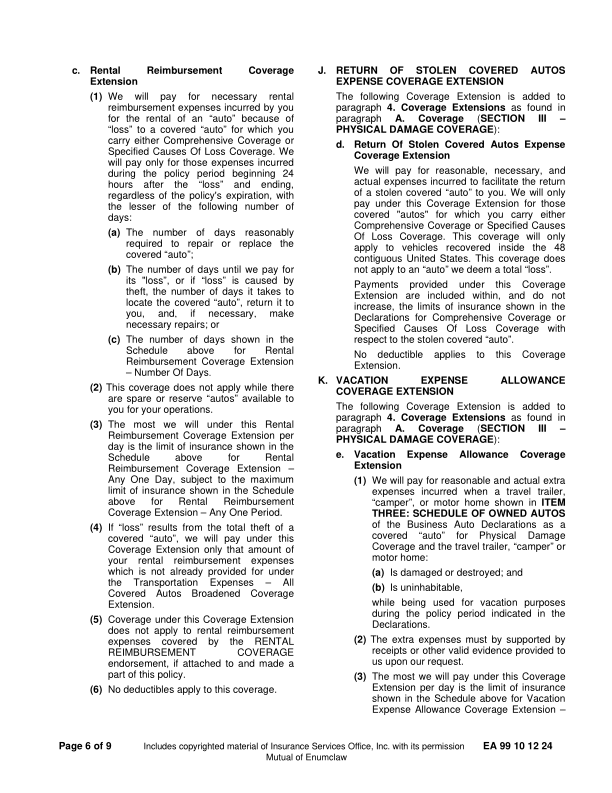
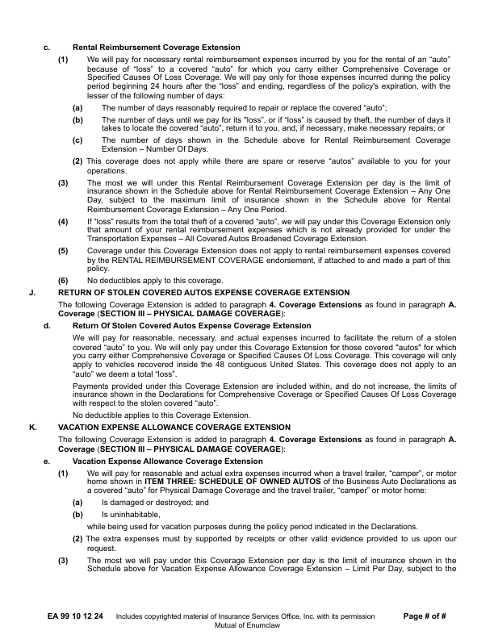
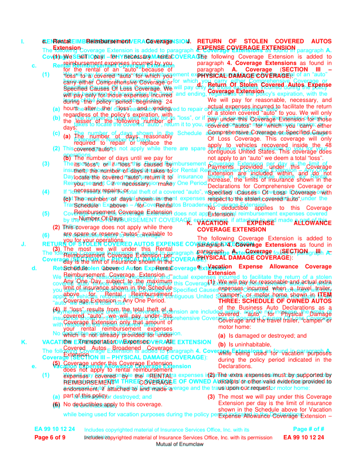
moved c. (-18.0, -11.4)pt moved Rental (+0.0, -11.4)pt moved Reimbursement (-23.4, -11.4)pt moved Coverage (-46.7, -11.4)pt moved Extension (+160.0, -22.4)pt moved (1) (-18.0, -22.4)pt moved We (+0.0, -22.4)pt moved will (-8.5, -22.4)pt moved pay (-16.8, -22.4)pt moved for (-25.2, -22.4)pt moved necessary (-33.5, -22.4)pt moved rental (-41.8, -22.4)pt moved reimbursement (+147.5, -33.4)pt moved expenses (+147.5, -33.4)pt moved incurred (+147.5, -33.4)pt moved by (+147.5, -33.4)pt moved you (+147.5, -33.4)pt moved for (+336.8, -44.4)pt moved the (+334.0, -44.4)pt moved rental (+331.2, -44.4)pt moved of (+328.3, -44.4)pt moved an (+325.5, -44.4)pt moved “auto” (+322.7, -44.4)pt moved because (-133.6, -33.2)pt moved of (-134.0, -33.2)pt moved “loss” (+57.7, -44.2)pt moved to (+58.8, -44.2)pt moved a (+60.1, -44.2)pt moved covered (+61.1, -44.2)pt moved “auto” (+62.3, -44.2)pt moved for (+63.4, -44.2)pt moved which (+64.5, -44.2)pt moved you (+65.7, -44.2)pt moved carry (+257.4, -55.2)pt moved either (+259.1, -55.2)pt moved Comprehensive (+260.8, -55.2)pt moved Coverage (+262.4, -55.2)pt moved or (+264.0, -55.2)pt moved Specified (+0.0, -55.7)pt moved Causes (-0.1, -55.7)pt moved Of (-0.3, -55.7)pt moved Loss (-0.5, -55.7)pt moved Coverage. (-0.7, -55.7)pt moved We (-0.9, -55.7)pt moved will (+188.3, -66.7)pt moved pay (+188.1, -66.7)pt moved only (+187.7, -66.7)pt moved for (+187.4, -66.7)pt moved those (+187.1, -66.7)pt moved expenses (+186.7, -66.7)pt moved incurred (+186.5, -66.7)pt moved during (+375.9, -77.7)pt moved the (+372.1, -77.7)pt moved policy (+368.2, -77.7)pt moved period (-89.1, -66.4)pt moved beginning (-92.7, -66.4)pt moved 24 (-96.2, -66.4)pt moved hours (+93.4, -77.4)pt moved after (+86.5, -77.4)pt moved the (+79.7, -77.4)pt moved “loss” (+72.7, -77.4)pt moved and (+65.8, -77.4)pt moved ending, (+58.9, -77.4)pt moved regardless (+248.5, -88.4)pt moved of (+248.1, -88.4)pt moved the (+247.8, -88.4)pt moved policy's (+247.3, -88.4)pt moved expiration, (+246.9, -88.4)pt moved with (+246.4, -88.4)pt moved the (+436.1, -99.4)pt moved lesser (-20.9, -88.2)pt moved of (-25.1, -88.2)pt moved the (-29.3, -88.2)pt moved following (-33.6, -88.2)pt moved number (-37.8, -88.2)pt moved of (-42.0, -88.2)pt moved days: (+146.7, -99.2)pt moved (a) (-18.0, -99.2)pt moved The (+0.0, -99.2)pt moved number (-6.8, -99.2)pt moved of (-13.6, -99.2)pt moved days (-20.5, -99.2)pt moved reasonably (-27.3, -99.2)pt moved required (+143.4, -110.2)pt moved to (+137.8, -110.2)pt moved repair (+132.3, -110.2)pt moved or (+126.7, -110.2)pt moved replace (+121.1, -110.2)pt moved the (+115.5, -110.2)pt moved covered (+286.2, -121.2)pt moved “auto”; (+286.2, -121.2)pt moved (b) (-18.0, -121.2)pt moved The (+0.0, -121.2)pt moved number (-1.0, -121.2)pt moved of (-2.1, -121.2)pt moved days (-3.2, -121.2)pt moved until (-4.4, -121.2)pt moved we (-5.5, -121.2)pt moved pay (-6.6, -121.2)pt moved for (-7.7, -121.2)pt moved its (+163.2, -132.2)pt moved "loss”, (+160.2, -132.2)pt moved or (+157.2, -132.2)pt moved if (+154.0, -132.2)pt moved “loss” (+151.0, -132.2)pt moved is (+147.9, -132.2)pt moved caused (+144.9, -132.2)pt moved by (+141.8, -132.2)pt moved theft, (+312.7, -143.2)pt moved the (+311.2, -143.2)pt moved number (+309.8, -143.2)pt moved of (+308.2, -143.2)pt moved days (+306.7, -143.2)pt moved it (+305.2, -143.2)pt moved takes (-131.2, -132.7)pt moved to (-132.9, -132.7)pt moved locate (+37.8, -143.7)pt moved the (+36.7, -143.7)pt moved covered (+35.5, -143.7)pt moved “auto”, (+34.5, -143.7)pt moved return (+33.2, -143.7)pt moved it (+32.1, -143.7)pt moved to (+31.0, -143.7)pt moved you, (+201.7, -154.7)pt moved and, (+191.5, -154.7)pt moved if (+181.4, -154.7)pt moved necessary, (+171.1, -154.7)pt moved make (+161.1, -154.7)pt moved necessary (+331.8, -165.7)pt moved repairs; (+331.8, -165.7)pt moved or (+331.8, -165.7)pt moved (c) (-18.0, -165.7)pt moved The (+0.0, -165.7)pt moved number (+0.4, -165.7)pt moved of (+0.6, -165.7)pt moved days (+1.0, -165.7)pt moved shown (+1.3, -165.7)pt moved in (+1.6, -165.7)pt moved the (+2.0, -165.7)pt moved Schedule (+176.3, -176.7)pt moved above (+163.4, -176.7)pt moved for (+150.3, -176.7)pt moved Rental (+137.3, -176.7)pt moved Reimbursement (+311.6, -187.7)pt moved Coverage (+313.0, -187.7)pt moved Extension (-124.0, -176.4)pt moved – (+46.7, -187.4)pt moved Number (+46.7, -187.4)pt moved Of (+46.7, -187.4)pt moved Days. (+46.7, -187.4)pt moved (2) (+0.0, -187.4)pt moved This (+0.9, -187.4)pt moved coverage (+2.0, -187.4)pt moved does (+3.1, -187.4)pt moved not (+4.2, -187.4)pt moved apply (+5.3, -187.4)pt moved while (+6.2, -187.4)pt moved there (+7.3, -187.4)pt moved are (+198.2, -198.4)pt moved spare (+198.9, -198.4)pt moved or (+199.5, -198.4)pt moved reserve (+200.2, -198.4)pt moved “autos” (+200.8, -198.4)pt moved available (+201.5, -198.4)pt moved to (+202.2, -198.4)pt moved you (+393.0, -209.4)pt moved for (+395.1, -209.4)pt moved your (+397.2, -209.4)pt moved operations. (-55.6, -198.2)pt moved (3) (-18.0, -198.2)pt moved The (+0.0, -198.2)pt moved most (-3.1, -198.2)pt moved we (-6.2, -198.2)pt moved will (-9.4, -198.2)pt moved under (-12.5, -198.2)pt moved this (-15.7, -198.2)pt moved Rental (-18.8, -198.2)pt moved Reimbursement (+172.4, -209.2)pt moved Coverage (+173.1, -209.2)pt moved Extension (+173.8, -209.2)pt moved per (+174.4, -209.2)pt moved day (+365.6, -220.2)pt moved is (+367.3, -220.2)pt moved the (+369.0, -220.2)pt moved limit (+370.6, -220.2)pt moved of (+372.4, -220.2)pt moved insurance (-81.2, -209.7)pt moved shown (-81.2, -209.7)pt moved in (-81.1, -209.7)pt moved the (-81.0, -209.7)pt moved Schedule (+108.6, -220.7)pt moved above (+86.8, -220.7)pt moved for (+64.9, -220.7)pt moved Rental (+43.2, -220.7)pt moved Reimbursement (+232.7, -231.7)pt moved Coverage (+228.9, -231.7)pt moved Extension (+225.1, -231.7)pt moved – (+221.1, -231.7)pt moved Any (+410.2, -242.7)pt moved One (+408.6, -242.7)pt moved Day, (-46.8, -231.4)pt moved subject (-45.5, -231.4)pt moved to (-43.4, -231.4)pt moved the (-41.4, -231.4)pt moved maximum (-39.3, -231.4)pt moved (1) (-282.0, +105.8)pt moved We (-264.0, +105.8)pt moved will (-264.2, +105.8)pt moved pay (-264.2, +105.8)pt moved for (-264.4, +105.8)pt moved reasonable (-264.4, +105.8)pt moved and (-264.4, +105.8)pt moved actual (-264.5, +105.8)pt moved extra (-264.6, +105.8)pt moved expenses (-68.1, +94.8)pt moved incurred (-71.6, +94.8)pt moved when (-75.1, +94.8)pt moved a (-78.7, +94.8)pt moved travel (-82.2, +94.8)pt moved trailer, (-85.8, +94.8)pt moved “camper”, (+110.2, +83.8)pt moved or (+108.2, +83.8)pt moved motor (+106.1, +83.8)pt moved home (-356.5, +94.3)pt moved shown (-358.4, +94.3)pt moved in (-360.5, +94.3)pt moved ITEM (-362.5, +94.3)pt moved THREE: (-165.8, +83.3)pt moved SCHEDULE (-166.2, +83.3)pt moved OF (-166.5, +83.3)pt moved OWNED (-166.9, +83.3)pt moved AUTOS (-167.7, +83.3)pt moved of (+28.8, +72.3)pt moved the (+25.6, +72.3)pt moved Business (+22.3, +72.3)pt moved Auto (+18.5, +72.3)pt moved Declarations (+15.3, +72.3)pt moved as (+12.0, +72.3)pt moved a (-451.9, +83.6)pt moved covered (-255.7, +72.6)pt moved “auto” (-264.1, +72.6)pt moved for (-272.6, +72.6)pt moved Physical (-281.1, +72.6)pt moved Damage (-289.7, +72.6)pt moved Coverage (-93.4, +61.6)pt moved and (-93.7, +61.6)pt moved the (-93.9, +61.6)pt moved travel (-94.2, +61.6)pt moved trailer, (-94.5, +61.6)pt moved “camper” (-95.4, +61.6)pt moved or (-95.7, +61.6)pt moved motor (+100.5, +50.6)pt moved home: (+100.5, +50.6)pt moved (a) (-282.0, +50.6)pt moved Is (-264.0, +50.6)pt moved damaged (-264.0, +50.6)pt moved or (-264.0, +50.6)pt moved destroyed; (-264.0, +50.6)pt moved and (-264.0, +50.6)pt moved (b) (-282.0, +50.6)pt moved Is (-264.0, +50.6)pt moved uninhabitable, (-264.0, +50.6)pt moved while (-264.0, +50.6)pt moved being (-268.0, +50.6)pt moved used (-272.2, +50.6)pt moved for (-276.3, +50.6)pt moved vacation (-280.5, +50.6)pt moved purposes (-284.6, +50.6)pt moved during (-88.4, +39.6)pt moved the (-91.7, +39.6)pt moved policy (-95.0, +39.6)pt moved period (-98.4, +39.6)pt moved indicated (-101.7, +39.6)pt moved in (-105.0, +39.6)pt moved the (-108.4, +39.6)pt moved Declarations. (+87.8, +28.6)pt moved (2) (-264.0, +28.6)pt moved The (-264.1, +28.6)pt moved extra (-264.1, +28.6)pt moved expenses (-264.1, +28.6)pt moved must (-264.0, +28.6)pt moved by (-264.0, +28.6)pt moved supported (-264.0, +28.6)pt moved by (-264.0, +28.6)pt moved receipts (-66.2, +17.6)pt moved or (-65.1, +17.6)pt moved other (-64.2, +17.6)pt moved valid (-63.1, +17.6)pt moved evidence (-62.1, +17.6)pt moved provided (-61.1, +17.6)pt moved to (-60.0, +17.6)pt moved us (+137.7, +6.6)pt moved upon (+139.2, +6.6)pt moved our (+140.7, +6.6)pt moved request. (-319.6, +17.8)pt moved (3) (-282.0, +17.8)pt moved The (-264.0, +17.8)pt moved most (-263.7, +17.8)pt moved we (-263.4, +17.8)pt moved will (-263.0, +17.8)pt moved pay (-262.7, +17.8)pt moved under (-262.5, +17.8)pt moved this (-262.1, +17.8)pt moved Coverage (-261.9, +17.8)pt moved Extension (-64.2, +6.8)pt moved per (-64.0, +6.8)pt moved day (-63.8, +6.8)pt moved is (-63.7, +6.8)pt moved the (-63.6, +6.8)pt moved limit (-63.5, +6.8)pt moved of (-63.3, +6.8)pt moved insurance (-63.2, +6.8)pt moved shown (+134.5, -4.2)pt moved in (+134.8, -4.2)pt moved the (+135.2, -4.2)pt moved Schedule (-326.2, +6.3)pt moved above (-326.4, +6.3)pt moved for (-326.7, +6.3)pt moved Vacation (-326.8, +6.3)pt moved Expense (-130.5, -4.7)pt moved Allowance (-131.4, -4.7)pt moved Coverage (-131.7, -4.7)pt moved Extension (-132.1, -4.7)pt moved – (-132.5, -4.7)pt moved Includes (+0.0, +17.3)pt moved copyrighted (+0.0, +17.3)pt moved material (+0.0, +17.3)pt moved of (+0.0, +17.3)pt moved Insurance (+0.1, +17.3)pt moved Services (+0.1, +17.3)pt moved Office, (+0.1, +17.3)pt moved Inc. (-0.1, +17.3)pt moved with (-0.1, +17.3)pt moved its (-0.1, +17.3)pt moved permission (-0.0, +17.3)pt moved Mutual (+0.1, +17.6)pt moved of (+0.1, +17.6)pt moved Enumclaw (+0.1, +17.6)pt
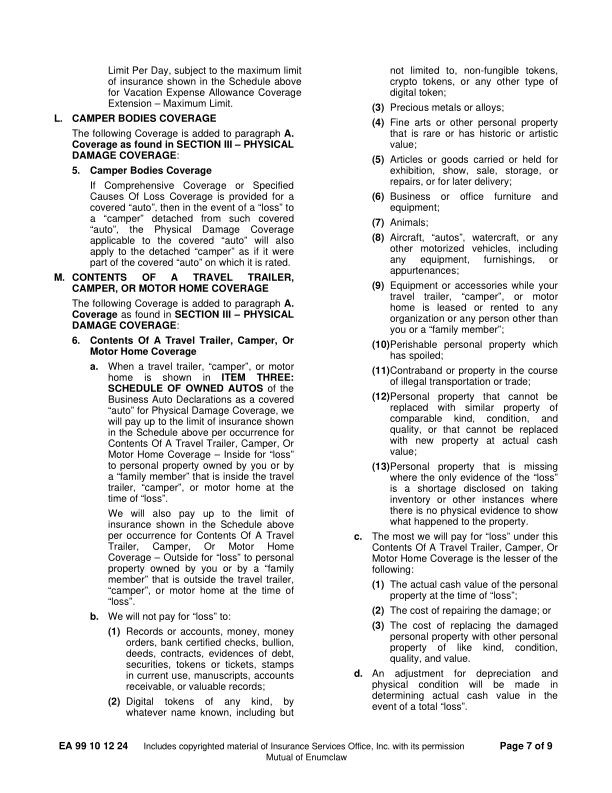
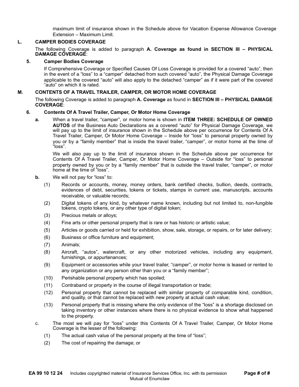
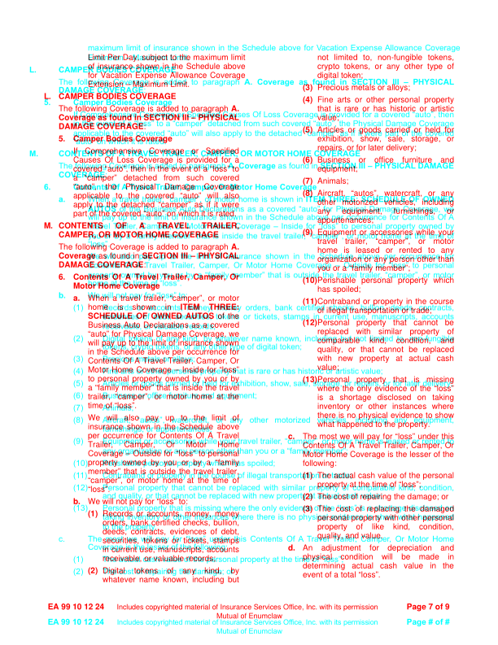
moved maximum (-129.3, -11.4)pt moved limit (-128.7, -11.4)pt moved of (+68.5, -22.4)pt moved insurance (+68.5, -22.4)pt moved shown (+68.5, -22.4)pt moved in (+68.5, -22.4)pt moved the (+68.5, -22.4)pt moved Schedule (+68.5, -22.4)pt moved above (+68.5, -22.4)pt moved for (+265.6, -33.4)pt moved Vacation (+265.6, -33.4)pt moved Expense (+264.7, -33.4)pt moved Allowance (+264.2, -33.4)pt moved Coverage (+264.0, -33.4)pt moved Extension (+0.0, -33.2)pt moved – (-0.0, -33.2)pt moved Maximum (-0.0, -33.2)pt moved Limit. (-0.0, -33.2)pt moved CAMPER (+0.0, -33.2)pt moved BODIES (-0.0, -33.2)pt moved COVERAGE (-0.0, -33.2)pt moved The (+0.0, -33.2)pt moved following (+2.3, -33.2)pt moved Coverage (+4.7, -33.2)pt moved is (+7.0, -33.2)pt moved added (+9.4, -33.2)pt moved to (+11.7, -33.2)pt moved paragraph (+14.0, -33.2)pt moved A. (+16.3, -33.2)pt moved Coverage (+243.9, -44.2)pt moved as (+246.9, -44.2)pt moved found (+249.7, -44.2)pt moved in (+252.6, -44.2)pt moved SECTION (+255.4, -44.2)pt moved III (+258.3, -44.2)pt moved – (+261.2, -44.2)pt moved PHYSICAL (+264.0, -44.2)pt moved DAMAGE (+0.0, -44.7)pt moved 5. (-18.0, -44.7)pt moved Camper (+0.0, -44.7)pt moved Bodies (-0.0, -44.7)pt moved Coverage (-0.0, -44.7)pt moved If (+0.0, -44.7)pt moved Comprehensive (-5.9, -44.7)pt moved Coverage (-11.7, -44.7)pt moved or (-17.6, -44.7)pt moved Specified (-23.4, -44.7)pt moved Causes (+183.4, -55.7)pt moved Of (+181.7, -55.7)pt moved Loss (+180.0, -55.7)pt moved Coverage (+178.3, -55.7)pt moved is (+176.6, -55.7)pt moved provided (+174.9, -55.7)pt moved for (+173.2, -55.7)pt moved a (+171.4, -55.7)pt moved covered (+378.3, -66.7)pt moved then (+378.2, -66.7)pt moved in (-92.8, -55.4)pt moved the (-92.8, -55.4)pt moved event (-93.0, -55.4)pt moved of (-93.0, -55.4)pt moved a (-93.1, -55.4)pt moved “loss” (-93.2, -55.4)pt moved to (-93.3, -55.4)pt moved a (+113.7, -66.4)pt moved “camper” (+108.6, -66.4)pt moved detached (+103.4, -66.4)pt moved from (+98.3, -66.4)pt moved such (+93.2, -66.4)pt moved covered (+88.0, -66.4)pt moved “auto”, (+294.9, -77.4)pt moved the (+287.2, -77.4)pt moved Physical (+279.5, -77.4)pt moved Damage (+271.8, -77.4)pt moved Coverage (+264.0, -77.4)pt moved applicable (+0.0, -77.2)pt moved to (-3.8, -77.2)pt moved the (-7.7, -77.2)pt moved covered (-11.5, -77.2)pt moved “auto” (-15.4, -77.2)pt moved will (-19.3, -77.2)pt moved also (-23.1, -77.2)pt moved apply (+184.1, -88.2)pt moved to (+183.1, -88.2)pt moved the (+182.1, -88.2)pt moved detached (+181.1, -88.2)pt moved “camper” (+180.0, -88.2)pt moved as (+179.0, -88.2)pt moved if (+177.9, -88.2)pt moved it (+176.9, -88.2)pt moved were (+175.9, -88.2)pt moved part (+383.1, -99.2)pt moved of (+383.6, -99.2)pt moved the (+384.1, -99.2)pt moved covered (+384.6, -99.2)pt moved “auto” (-86.2, -88.7)pt moved on (-86.2, -88.7)pt moved which (-86.2, -88.7)pt moved it (-86.2, -88.7)pt moved is (-86.2, -88.7)pt moved rated. (-86.2, -88.7)pt moved M. (-18.0, -88.7)pt moved CONTENTS (+0.0, -88.7)pt moved OF (-12.1, -88.7)pt moved A (-24.6, -88.7)pt moved TRAVEL (-37.2, -88.7)pt moved TRAILER, (-50.3, -88.7)pt moved CAMPER, (+174.4, -99.7)pt moved OR (+174.4, -99.7)pt moved MOTOR (+174.4, -99.7)pt moved HOME (+174.2, -99.7)pt moved COVERAGE (+174.2, -99.7)pt moved The (+0.0, -99.7)pt moved following (-0.5, -99.7)pt moved Coverage (-1.0, -99.7)pt moved is (-1.5, -99.7)pt moved added (-2.0, -99.7)pt moved to (-2.6, -99.7)pt moved paragraph (-3.1, -99.7)pt moved A. (-3.7, -99.7)pt moved Coverage (+221.2, -110.7)pt moved as (+220.6, -110.7)pt moved found (+220.0, -110.7)pt moved in (+219.4, -110.7)pt moved SECTION (+218.8, -110.7)pt moved III (+218.2, -110.7)pt moved – (+217.5, -110.7)pt moved PHYSICAL (+217.0, -110.7)pt moved DAMAGE (+441.6, -121.7)pt moved 6. (-18.0, -110.4)pt moved Contents (+0.0, -110.4)pt moved Of (-1.8, -110.4)pt moved A (-4.1, -110.4)pt moved Travel (-6.3, -110.4)pt moved Trailer, (-8.7, -110.4)pt moved Camper, (-11.7, -110.4)pt moved Or (-14.1, -110.4)pt moved Motor (+192.6, -121.4)pt moved Home (+192.6, -121.4)pt moved Coverage (+192.6, -121.4)pt moved a. (-18.0, -121.4)pt moved When (+0.0, -121.4)pt moved a (-0.6, -121.4)pt moved travel (-1.3, -121.4)pt moved trailer, (-1.9, -121.4)pt moved “camper”, (-3.1, -121.4)pt moved or (-3.9, -121.4)pt moved motor (-4.5, -121.4)pt moved home (+184.9, -132.4)pt moved is (+177.2, -132.4)pt moved shown (+169.5, -132.4)pt moved in (+161.8, -132.4)pt moved ITEM (+154.2, -132.4)pt moved THREE: (+146.4, -132.4)pt moved SCHEDULE (+335.8, -143.4)pt moved OF (+335.0, -143.4)pt moved OWNED (+334.2, -143.4)pt moved AUTOS (-120.1, -132.2)pt moved of (-120.8, -132.2)pt moved the (-121.2, -132.2)pt moved Business (+68.5, -143.2)pt moved Auto (+68.3, -143.2)pt moved Declarations (+68.6, -143.2)pt moved as (+68.9, -143.2)pt moved a (+69.2, -143.2)pt moved covered (+69.4, -143.2)pt moved “auto” (+259.2, -154.2)pt moved for (+260.2, -154.2)pt moved Physical (+261.2, -154.2)pt moved Damage (+262.2, -154.2)pt moved Coverage, (+263.1, -154.2)pt moved we (+264.0, -154.2)pt moved will (+0.0, -154.7)pt moved pay (+0.6, -154.7)pt moved up (+1.3, -154.7)pt moved to (+1.8, -154.7)pt moved the (+2.5, -154.7)pt moved limit (+3.0, -154.7)pt moved of (+3.6, -154.7)pt moved insurance (+4.2, -154.7)pt moved shown (+4.9, -154.7)pt moved in (+194.4, -165.7)pt moved the (+194.8, -165.7)pt moved Schedule (+195.2, -165.7)pt moved above (+195.5, -165.7)pt moved per (+195.8, -165.7)pt moved occurrence (+196.1, -165.7)pt moved for (+196.4, -165.7)pt moved Contents (+386.0, -176.7)pt moved Of (+386.3, -176.7)pt moved A (+386.0, -176.7)pt moved Travel (-67.4, -165.4)pt moved Trailer, (-67.6, -165.4)pt moved Camper, (-68.2, -165.4)pt moved Or (-68.3, -165.4)pt moved Motor (+121.3, -176.4)pt moved Home (+121.5, -176.4)pt moved Coverage (+121.6, -176.4)pt moved – (+121.6, -176.4)pt moved Inside (+121.7, -176.4)pt moved for (+121.8, -176.4)pt moved “loss” (+121.9, -176.4)pt moved to (+311.6, -187.4)pt moved personal (+311.6, -187.4)pt moved property (+311.4, -187.4)pt moved owned (+311.3, -187.4)pt moved by (+311.2, -187.4)pt moved you (-142.7, -176.2)pt moved or (-142.7, -176.2)pt moved by (-142.8, -176.2)pt moved a (+47.0, -187.2)pt moved “family (+47.6, -187.2)pt moved member” (+48.2, -187.2)pt moved that (+48.7, -187.2)pt moved is (+49.2, -187.2)pt moved inside (+49.8, -187.2)pt moved the (+50.4, -187.2)pt moved travel (+51.0, -187.2)pt moved trailer, (+240.7, -198.2)pt moved “camper”, (+238.3, -198.2)pt moved or (+236.5, -198.2)pt moved motor (+234.7, -198.2)pt moved home (+232.8, -198.2)pt moved at (+231.0, -198.2)pt moved the (+229.3, -198.2)pt moved time (+419.0, -209.2)pt moved of (+420.0, -209.2)pt moved “loss”. (-32.8, -198.7)pt moved We (+0.0, -198.7)pt moved will (-2.8, -198.7)pt moved also (-5.4, -198.7)pt moved pay (-8.2, -198.7)pt moved up (-10.8, -198.7)pt moved to (-13.5, -198.7)pt moved the (-16.1, -198.7)pt moved limit (-18.8, -198.7)pt moved of (-21.5, -198.7)pt moved insurance (+169.7, -209.7)pt moved shown (+170.4, -209.7)pt moved in (+170.9, -209.7)pt moved the (+171.5, -209.7)pt moved Schedule (+172.2, -209.7)pt moved above (+172.8, -209.7)pt moved per (+364.0, -220.7)pt moved occurrence (+365.0, -220.7)pt moved for (+366.0, -220.7)pt moved Contents (-88.2, -209.4)pt moved Of (-87.9, -209.4)pt moved A (-88.0, -209.4)pt moved Travel (-88.4, -209.4)pt moved c. (-282.0, +124.8)pt moved The (-264.0, +124.8)pt moved most (-262.9, +124.8)pt moved we (-261.7, +124.8)pt moved will (-260.6, +124.8)pt moved pay (-259.4, +124.8)pt moved for (-258.4, +124.8)pt moved “loss” (-257.2, +124.8)pt moved under (-256.1, +124.8)pt moved this (-255.0, +124.8)pt moved Contents (-64.5, +113.8)pt moved Of (-63.4, +113.8)pt moved A (-62.8, +113.8)pt moved Travel (-62.5, +113.8)pt moved Trailer, (-61.9, +113.8)pt moved Camper, (-61.7, +113.8)pt moved Or (-61.1, +113.8)pt moved Motor (+129.3, +102.8)pt moved Home (+130.9, +102.8)pt moved Coverage (-322.0, +113.3)pt moved is (-322.2, +113.3)pt moved the (-322.3, +113.3)pt moved lesser (-322.4, +113.3)pt moved of (-322.6, +113.3)pt moved the (-322.6, +113.3)pt moved following: (-134.0, +102.3)pt moved (1) (-282.0, +102.3)pt moved The (-264.0, +102.3)pt moved actual (-264.3, +102.3)pt moved cash (-264.5, +102.3)pt moved value (-264.8, +102.3)pt moved of (-265.2, +102.3)pt moved the (-265.5, +102.3)pt moved personal (-265.8, +102.3)pt moved property (-95.0, +91.3)pt moved at (-95.1, +91.3)pt moved the (-95.1, +91.3)pt moved time (-95.1, +91.3)pt moved of (-95.1, +91.3)pt moved “loss”; (-95.1, +91.3)pt moved (2) (-282.0, +91.3)pt moved The (-264.0, +91.3)pt moved cost (-264.0, +91.3)pt moved of (-264.0, +91.3)pt moved repairing (-264.0, +91.3)pt moved the (-264.0, +91.3)pt moved damage; (-264.0, +91.3)pt moved or (-264.0, +91.3)pt moved EA (+0.0, +17.9)pt moved 99 (-0.4, +17.9)pt moved 10 (-0.4, +17.9)pt moved 12 (-0.4, +17.9)pt moved 24 (-0.4, +17.9)pt moved Includes (+0.0, +17.3)pt moved copyrighted (+0.0, +17.3)pt moved material (+0.0, +17.3)pt moved of (+0.0, +17.3)pt moved Insurance (+0.1, +17.3)pt moved Services (+0.1, +17.3)pt moved Office, (+0.1, +17.3)pt moved Inc. (-0.1, +17.3)pt moved with (-0.1, +17.3)pt moved its (-0.1, +17.3)pt moved permission (-0.0, +17.3)pt moved Page (-0.0, +17.9)pt moved of (+0.0, +17.9)pt moved Mutual (+0.1, +17.6)pt moved of (+0.1, +17.6)pt moved Enumclaw (+0.1, +17.6)pt size c. 10.0 -> 10.0pt size (1) 10.0 -> 10.0pt size (2) 10.0 -> 10.0pt
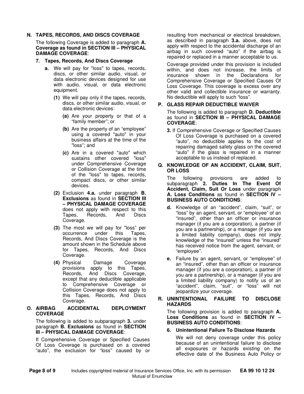
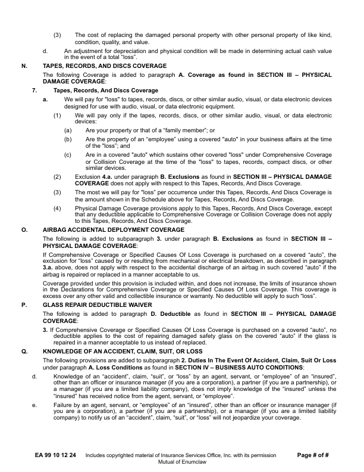
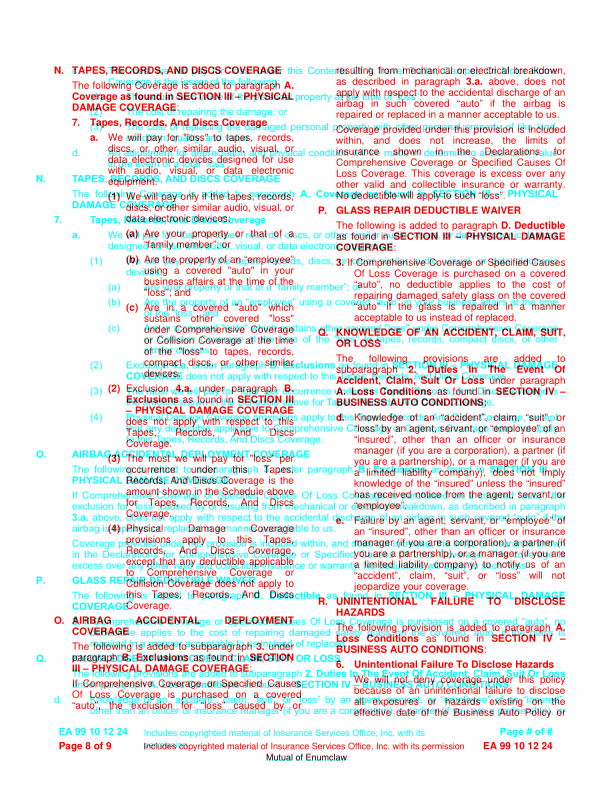
moved N. (-18.0, +40.3)pt moved TAPES, (+0.0, +40.3)pt moved RECORDS, (-0.8, +40.3)pt moved AND (-1.1, +40.3)pt moved DISCS (-1.1, +40.3)pt moved COVERAGE (-1.2, +40.3)pt moved The (+0.0, +40.3)pt moved following (+2.3, +40.3)pt moved Coverage (+4.7, +40.3)pt moved is (+7.0, +40.3)pt moved added (+9.4, +40.3)pt moved to (+11.7, +40.3)pt moved paragraph (+14.0, +40.3)pt moved A. (+16.3, +40.3)pt moved Coverage (+243.9, +29.3)pt moved as (+246.9, +29.3)pt moved found (+249.7, +29.3)pt moved in (+252.6, +29.3)pt moved SECTION (+255.4, +29.3)pt moved III (+258.3, +29.3)pt moved – (+261.2, +29.3)pt moved PHYSICAL (+264.0, +29.3)pt moved DAMAGE (+0.0, +29.6)pt moved 7. (-18.0, +29.6)pt moved Tapes, (+0.0, +29.6)pt moved Records, (-0.8, +29.6)pt moved And (-1.1, +29.6)pt moved Discs (-1.1, +29.6)pt moved Coverage (-1.1, +29.6)pt moved a. (-18.0, +29.6)pt moved We (+0.0, +29.6)pt moved will (-1.8, +29.6)pt moved pay (-3.6, +29.6)pt moved for (-5.3, +29.6)pt moved "loss" (-7.0, +29.6)pt moved to (-8.8, +29.6)pt moved tapes, (-10.5, +29.6)pt moved records, (-12.2, +29.6)pt moved discs, (+176.7, +18.6)pt moved or (+173.8, +18.6)pt moved other (+170.8, +18.6)pt moved similar (+167.9, +18.6)pt moved audio, (+164.9, +18.6)pt moved visual, (+162.0, +18.6)pt moved or (+159.0, +18.6)pt moved data (+347.9, +7.6)pt moved electronic (+346.7, +7.6)pt moved devices (+345.3, +7.6)pt moved designed (-109.0, +18.8)pt moved for (-110.5, +18.8)pt moved use (-112.0, +18.8)pt moved with (+76.7, +7.8)pt moved audio, (+71.3, +7.8)pt moved visual, (+65.7, +7.8)pt moved or (+60.2, +7.8)pt moved data (+54.7, +7.8)pt moved electronic (+49.1, +7.8)pt moved equipment. (+237.9, -3.2)pt moved (1) (-18.0, -3.2)pt moved We (+0.0, -3.2)pt moved will (+1.3, -3.2)pt moved pay (+2.7, -3.2)pt moved only (+4.1, -3.2)pt moved if (+5.5, -3.2)pt moved the (+6.9, -3.2)pt moved tapes, (+8.3, -3.2)pt moved records, (+9.8, -3.2)pt moved discs, (+182.3, -14.2)pt moved or (+184.1, -14.2)pt moved other (+185.8, -14.2)pt moved similar (+187.5, -14.2)pt moved audio, (+189.1, -14.2)pt moved visual, (+190.9, -14.2)pt moved or (+192.5, -14.2)pt moved GLASS (-264.0, +301.6)pt moved REPAIR (-264.0, +301.6)pt moved DEDUCTIBLE (-264.8, +301.6)pt moved WAIVER (-264.8, +301.6)pt moved The (-264.0, +301.6)pt moved following (-261.2, +301.6)pt moved is (-258.5, +301.6)pt moved added (-255.8, +301.6)pt moved to (-253.0, +301.6)pt moved paragraph (-250.3, +301.6)pt moved D. (-247.6, +301.6)pt moved Deductible (-244.9, +301.6)pt moved as (-9.4, +290.6)pt moved found (-8.0, +290.6)pt moved in (-6.6, +290.6)pt moved SECTION (-5.3, +290.6)pt moved III (-3.9, +290.6)pt moved – (-2.5, +290.6)pt moved PHYSICAL (-1.2, +290.6)pt moved DAMAGE (+0.1, +290.6)pt moved 3. (-264.0, +290.8)pt moved If (-263.1, +290.8)pt moved Comprehensive (-262.4, +290.8)pt moved Coverage (-261.6, +290.8)pt moved or (-260.9, +290.8)pt moved Specified (-260.1, +290.8)pt moved Causes (-259.3, +290.8)pt moved Of (-44.1, +279.8)pt moved Loss (-44.5, +279.8)pt moved Coverage (-45.1, +279.8)pt moved is (-45.6, +279.8)pt moved purchased (-46.1, +279.8)pt moved on (-46.5, +279.8)pt moved a (-47.1, +279.8)pt moved covered (-47.6, +279.8)pt moved “auto”, (+167.7, +268.8)pt moved no (+165.1, +268.8)pt moved deductible (-316.9, +279.3)pt moved applies (-318.6, +279.3)pt moved to (-320.1, +279.3)pt moved the (-321.7, +279.3)pt moved cost (-323.4, +279.3)pt moved of (-325.0, +279.3)pt moved repairing (-108.7, +268.3)pt moved damaged (-107.1, +268.3)pt moved safety (-105.7, +268.3)pt moved glass (-104.3, +268.3)pt moved on (-102.8, +268.3)pt moved the (-101.3, +268.3)pt moved covered (-99.8, +268.3)pt moved “auto” (+116.5, +257.3)pt moved if (+114.9, +257.3)pt moved the (+113.2, +257.3)pt moved glass (+111.6, +257.3)pt moved is (+110.0, +257.3)pt moved repaired (-372.0, +268.6)pt moved in (-375.7, +268.6)pt moved a (-379.5, +268.6)pt moved manner (-383.1, +268.6)pt moved acceptable (-169.0, +257.6)pt moved to (-169.0, +257.6)pt moved us (-169.0, +257.6)pt moved instead (-169.0, +257.6)pt moved of (-169.0, +257.6)pt moved replaced. (-169.0, +257.6)pt moved KNOWLEDGE (-264.0, +257.6)pt moved OF (-265.3, +257.6)pt moved AN (-267.1, +257.6)pt moved ACCIDENT, (-268.9, +257.6)pt moved CLAIM, (-271.5, +257.6)pt moved SUIT, (-272.9, +257.6)pt moved OR (-40.3, +246.6)pt moved LOSS (-40.4, +246.6)pt moved The (-264.0, +246.6)pt moved following (-276.7, +246.6)pt moved provisions (-289.5, +246.6)pt moved are (-302.3, +246.6)pt moved added (-315.0, +246.6)pt moved to (-327.7, +246.6)pt moved subparagraph (-95.5, +235.6)pt moved 2. (-103.2, +235.6)pt moved Duties (-111.1, +235.6)pt moved In (-119.0, +235.6)pt moved The (-126.8, +235.6)pt moved Event (-134.7, +235.6)pt moved Of (-142.5, +235.6)pt moved Accident, (+89.4, +224.6)pt moved Claim, (+87.3, +224.6)pt moved Suit (+85.2, +224.6)pt moved Or (+83.1, +224.6)pt moved Loss (+81.0, +224.6)pt moved under (-417.4, +235.8)pt moved paragraph (-419.6, +235.8)pt moved A. (-187.3, +224.8)pt moved Loss (-189.6, +224.8)pt moved Conditions (-192.0, +224.8)pt moved as (-194.3, +224.8)pt moved found (-196.7, +224.8)pt moved in (-199.1, +224.8)pt moved SECTION (-201.4, +224.8)pt moved IV (-203.8, +224.8)pt moved – (-206.2, +224.8)pt moved BUSINESS (+26.0, +213.8)pt moved AUTO (+25.7, +213.8)pt moved d. (-282.0, +213.8)pt moved Knowledge (-264.0, +213.8)pt moved of (-265.6, +213.8)pt moved an (-267.2, +213.8)pt moved “accident”, (-268.8, +213.8)pt moved claim, (-270.4, +213.8)pt moved “suit”, (-272.1, +213.8)pt moved or (-273.7, +213.8)pt moved “loss” (-57.9, +202.8)pt moved by (-56.3, +202.8)pt moved an (-55.0, +202.8)pt moved agent, (-53.5, +202.8)pt moved servant, (-52.2, +202.8)pt moved or (-50.7, +202.8)pt moved “employee” (-49.4, +202.8)pt moved of (-47.9, +202.8)pt moved an (-46.5, +202.8)pt moved “insured”, (+169.3, +191.8)pt moved other (-312.3, +202.3)pt moved than (-315.4, +202.3)pt moved an (-318.4, +202.3)pt moved officer (-321.6, +202.3)pt moved or (-324.9, +202.3)pt moved insurance (-328.0, +202.3)pt moved manager (-113.6, +191.3)pt moved (if (-113.8, +191.3)pt moved you (-114.1, +191.3)pt moved are (-114.5, +191.3)pt moved a (-114.7, +191.3)pt moved corporation), (-115.0, +191.3)pt moved a (-115.3, +191.3)pt moved partner (-115.6, +191.3)pt moved (if (-115.8, +191.3)pt moved you (+98.5, +180.3)pt moved are (+98.6, +180.3)pt moved a (+98.6, +180.3)pt moved partnership), (+98.6, +180.3)pt moved or (+98.6, +180.3)pt moved a (-379.8, +191.6)pt moved manager (-378.7, +191.6)pt moved (if (-377.5, +191.6)pt moved you (-376.3, +191.6)pt moved are (-375.2, +191.6)pt moved a (-159.7, +180.6)pt moved limited (-162.5, +180.6)pt moved liability (-165.3, +180.6)pt moved company), (-168.1, +180.6)pt moved does (-171.0, +180.6)pt moved not (-173.8, +180.6)pt moved imply (-176.7, +180.6)pt moved knowledge (+38.8, +169.6)pt moved of (+39.7, +169.6)pt moved the (+40.4, +169.6)pt moved “insured” (+41.2, +169.6)pt moved unless (+42.0, +169.6)pt moved the (+42.8, +169.6)pt moved “insured” (-436.0, +180.8)pt moved has (-221.8, +169.8)pt moved received (-222.5, +169.8)pt moved notice (-223.2, +169.8)pt moved from (-224.1, +169.8)pt moved the (-224.8, +169.8)pt moved agent, (-225.5, +169.8)pt moved servant, (-226.3, +169.8)pt moved or (-227.1, +169.8)pt moved “employee”. (-12.8, +158.8)pt moved e. (-282.0, +158.8)pt moved Failure (-264.0, +158.8)pt moved by (-264.6, +158.8)pt moved an (-265.3, +158.8)pt moved agent, (-265.9, +158.8)pt moved servant, (-266.5, +158.8)pt moved or (-267.1, +158.8)pt moved “employee” (-267.7, +158.8)pt moved of (-268.4, +158.8)pt moved an (-53.5, +147.8)pt moved “insured”, (-53.6, +147.8)pt moved other (-53.7, +147.8)pt moved than (-53.8, +147.8)pt moved an (-54.0, +147.8)pt moved officer (-54.1, +147.8)pt moved or (-54.5, +147.8)pt moved insurance (-54.7, +147.8)pt moved manager (+160.2, +136.8)pt moved (if (+160.6, +136.8)pt moved you (-318.2, +147.3)pt moved are (-316.8, +147.3)pt moved a (-315.4, +147.3)pt moved corporation), (-314.0, +147.3)pt moved a (-312.6, +147.3)pt moved partner (-311.2, +147.3)pt moved (if (-309.8, +147.3)pt moved you (-93.7, +136.3)pt moved are (-91.9, +136.3)pt moved a (-90.3, +136.3)pt moved partnership), (-88.6, +136.3)pt moved or (-86.9, +136.3)pt moved a (-85.2, +136.3)pt moved manager (-83.5, +136.3)pt moved (if (-81.8, +136.3)pt moved you (-80.0, +136.3)pt moved are (-78.3, +136.3)pt moved a (+137.8, +125.3)pt moved limited (+137.4, +125.3)pt moved liability (+136.9, +125.3)pt moved company) (-343.7, +136.6)pt moved to (-346.1, +136.6)pt moved notify (-348.4, +136.6)pt moved us (-350.7, +136.6)pt moved of (-353.1, +136.6)pt moved an (-355.4, +136.6)pt moved “accident”, (-141.2, +125.6)pt moved claim, (-147.1, +125.6)pt moved “suit”, (-153.2, +125.6)pt moved or (-159.1, +125.6)pt moved “loss” (-165.1, +125.6)pt moved will (-171.1, +125.6)pt moved not (-177.0, +125.6)pt moved jeopardize (+37.1, +114.6)pt moved your (+37.1, +114.6)pt moved coverage. (+37.1, +114.6)pt moved Includes (+0.0, +17.3)pt moved copyrighted (+0.0, +17.3)pt moved material (+0.0, +17.3)pt moved of (+0.0, +17.3)pt moved Insurance (+0.1, +17.3)pt moved Services (+0.1, +17.3)pt moved Office, (+0.1, +17.3)pt moved Inc. (-0.1, +17.3)pt moved with (-0.1, +17.3)pt moved its (-0.1, +17.3)pt moved permission (-0.0, +17.3)pt moved Mutual (+0.1, +17.6)pt moved of (+0.1, +17.6)pt moved Enumclaw (+0.1, +17.6)pt size (1) 10.0 -> 10.0pt size d. 10.0 -> 10.0pt size e. 10.0 -> 10.0pt
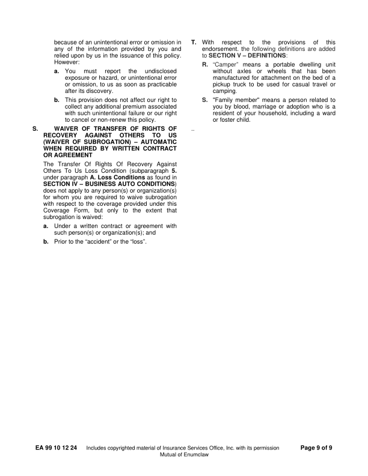
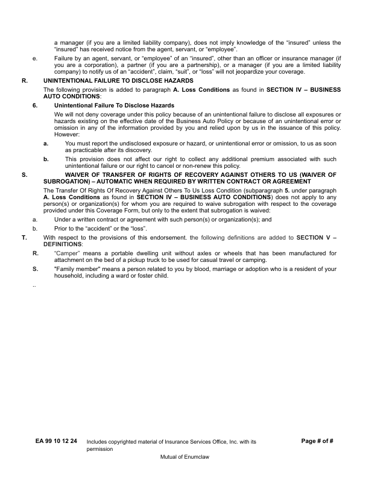
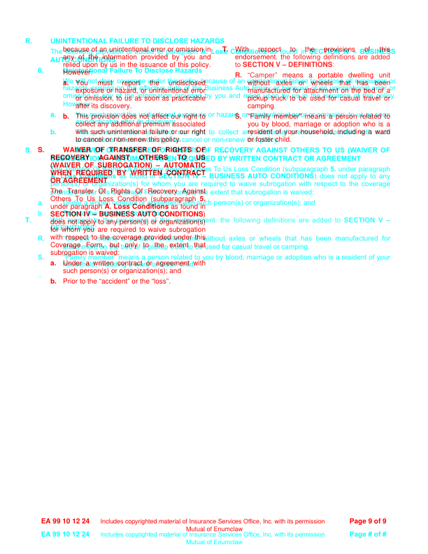
moved because (+313.3, +55.3)pt moved of (+314.0, +55.3)pt moved an (+314.8, +55.3)pt moved unintentional (+315.6, +55.3)pt moved error (+316.3, +55.3)pt moved or (+317.1, +55.3)pt moved omission (-161.3, +66.6)pt moved in (-160.1, +66.6)pt moved any (+55.5, +55.6)pt moved of (+53.6, +55.6)pt moved the (+51.8, +55.6)pt moved information (+49.9, +55.6)pt moved provided (+48.1, +55.6)pt moved by (+46.1, +55.6)pt moved you (+44.2, +55.6)pt moved and (+42.4, +55.6)pt moved relied (+258.0, +44.6)pt moved upon (+258.7, +44.6)pt moved by (+259.5, +44.6)pt moved us (+260.3, +44.6)pt moved in (+261.1, +44.6)pt moved the (+261.8, +44.6)pt moved issuance (+262.6, +44.6)pt moved of (+263.3, +44.6)pt moved this (+264.0, +44.6)pt moved policy. (+264.8, +44.6)pt moved However: (+0.0, +44.8)pt moved a. (-18.0, +44.8)pt moved You (+0.0, +44.8)pt moved must (-11.4, +44.8)pt moved report (-22.0, +44.8)pt moved the (-32.5, +44.8)pt moved undisclosed (-43.0, +44.8)pt moved exposure (+145.8, +33.8)pt moved or (+145.6, +33.8)pt moved hazard, (+145.3, +33.8)pt moved or (+145.0, +33.8)pt moved unintentional (+144.8, +33.8)pt moved error (+144.5, +33.8)pt moved or (+333.3, +22.8)pt moved omission, (+332.7, +22.8)pt moved to (+332.0, +22.8)pt moved us (+331.4, +22.8)pt moved as (+330.7, +22.8)pt moved soon (+330.0, +22.8)pt moved as (-123.5, +33.3)pt moved practicable (-124.3, +33.3)pt moved after (+64.5, +22.3)pt moved its (+64.5, +22.3)pt moved discovery. (+64.4, +22.3)pt moved b. (-18.0, +22.3)pt moved This (+0.0, +22.3)pt moved provision (+1.9, +22.3)pt moved does (+3.9, +22.3)pt moved not (+5.7, +22.3)pt moved affect (+7.6, +22.3)pt moved our (+9.4, +22.3)pt moved right (+11.2, +22.3)pt moved to (+13.1, +22.3)pt moved collect (+204.5, +11.3)pt moved any (+207.0, +11.3)pt moved additional (+209.4, +11.3)pt moved premium (+211.9, +11.3)pt moved associated (+214.3, +11.3)pt moved with (+405.7, +0.3)pt moved such (+407.8, +0.3)pt moved unintentional (-45.6, +11.6)pt moved failure (-46.2, +11.6)pt moved or (-46.9, +11.6)pt moved our (-47.5, +11.6)pt moved right (-48.1, +11.6)pt moved to (+140.6, +0.6)pt moved cancel (+140.6, +0.6)pt moved or (+140.6, +0.6)pt moved non-renew (+140.6, +0.6)pt moved this (+140.6, +0.6)pt moved policy. (+140.6, +0.6)pt moved WAIVER (+18.0, +0.6)pt moved OF (+15.7, +0.6)pt moved TRANSFER (+13.9, +0.6)pt moved OF (+12.0, +0.6)pt moved RIGHTS (+10.2, +0.6)pt moved OF (+8.4, +0.6)pt moved RECOVERY (+234.6, -10.4)pt moved AGAINST (+225.1, -10.4)pt moved OTHERS (+216.4, -10.4)pt moved TO (+207.8, -10.4)pt moved US (+198.9, -10.4)pt moved (WAIVER (+425.1, -21.4)pt moved OF (+423.6, -21.4)pt moved SUBROGATION) (-67.6, -10.2)pt moved – (-70.9, -10.2)pt moved AUTOMATIC (-73.7, -10.2)pt moved WHEN (+150.1, -21.2)pt moved REQUIRED (+147.2, -21.2)pt moved BY (+144.2, -21.2)pt moved WRITTEN (+141.0, -21.2)pt moved CONTRACT (+138.0, -21.2)pt moved OR (+362.7, -32.2)pt moved AGREEMENT (+362.3, -32.2)pt moved The (+0.0, -32.2)pt moved Transfer (-4.1, -32.2)pt moved Of (-8.4, -32.2)pt moved Rights (-12.3, -32.2)pt moved Of (-16.2, -32.2)pt moved Recovery (-20.2, -32.2)pt moved Against (-24.7, -32.2)pt moved Others (+200.4, -43.2)pt moved To (+198.1, -43.2)pt moved Us (+194.9, -43.2)pt moved Loss (+192.9, -43.2)pt moved Condition (+190.8, -43.2)pt moved (subparagraph (+188.7, -43.2)pt moved 5. (+186.6, -43.2)pt moved under (+411.7, -54.2)pt moved paragraph (+411.7, -54.2)pt moved A. (-77.4, -43.7)pt moved Loss (-76.2, -43.7)pt moved Conditions (-75.1, -43.7)pt moved as (-73.9, -43.7)pt moved found (-72.7, -43.7)pt moved in (-71.6, -43.7)pt moved SECTION (+154.7, -54.7)pt moved IV (+155.6, -54.7)pt moved – (+156.6, -54.7)pt moved BUSINESS (+157.4, -54.7)pt moved AUTO (+157.9, -54.7)pt moved CONDITIONS) (+158.7, -54.7)pt moved does (+384.9, -65.7)pt moved not (+386.2, -65.7)pt moved apply (+387.5, -65.7)pt moved to (+388.9, -65.7)pt moved any (+390.2, -65.7)pt moved person(s) (-98.7, -54.4)pt moved or (-97.5, -54.4)pt moved organization(s) (-96.3, -54.4)pt moved for (+129.9, -65.4)pt moved whom (+129.8, -65.4)pt moved you (+129.7, -65.4)pt moved are (+129.5, -65.4)pt moved required (+129.5, -65.4)pt moved to (+129.4, -65.4)pt moved waive (+129.2, -65.4)pt moved subrogation (+129.1, -65.4)pt moved with (+355.2, -76.4)pt moved respect (+355.4, -76.4)pt moved to (+355.5, -76.4)pt moved the (+355.7, -76.4)pt moved coverage (+355.8, -76.4)pt moved provided (-134.3, -65.2)pt moved under (-135.6, -65.2)pt moved this (-136.9, -65.2)pt moved Coverage (+87.8, -76.2)pt moved Form, (+82.9, -76.2)pt moved but (+77.9, -76.2)pt moved only (+73.0, -76.2)pt moved to (+68.0, -76.2)pt moved the (+63.0, -76.2)pt moved extent (+58.1, -76.2)pt moved that (+53.1, -76.2)pt moved subrogation (+277.9, -87.2)pt moved is (+277.9, -87.2)pt moved waived: (+277.9, -87.2)pt moved a. (-18.0, -87.2)pt moved Under (+0.0, -87.2)pt moved a (-2.5, -87.2)pt moved written (-5.0, -87.2)pt moved contract (-7.4, -87.2)pt moved or (-10.0, -87.2)pt moved agreement (-12.5, -87.2)pt moved with (-15.1, -87.2)pt moved such (+191.7, -98.2)pt moved person(s) (+191.7, -98.2)pt moved or (+191.7, -98.2)pt moved organization(s); (+191.7, -98.2)pt moved and (+191.7, -98.2)pt moved b. (-18.0, -98.2)pt moved Prior (+0.0, -98.2)pt moved to (-0.0, -98.2)pt moved the (-0.0, -98.2)pt moved “accident” (-0.0, -98.2)pt moved or (-0.0, -98.2)pt moved the (-0.0, -98.2)pt moved “loss”. (-0.0, -98.2)pt moved EA (+0.0, +17.9)pt moved 99 (-0.4, +17.9)pt moved 10 (-0.4, +17.9)pt moved 12 (-0.4, +17.9)pt moved 24 (-0.4, +17.9)pt moved Includes (+0.0, +17.3)pt moved copyrighted (+0.0, +17.3)pt moved material (+0.0, +17.3)pt moved of (+0.0, +17.3)pt moved Insurance (+0.1, +17.3)pt moved Services (+0.1, +17.3)pt moved Office, (+0.1, +17.3)pt moved Inc. (-0.1, +17.3)pt moved with (-0.1, +17.3)pt moved its (-0.1, +17.3)pt moved permission (-0.0, +17.3)pt moved Page (-0.0, +17.9)pt moved of (+0.0, +17.9)pt moved Mutual (+0.1, +17.6)pt moved of (+0.1, +17.6)pt moved Enumclaw (+0.1, +17.6)pt size a. 10.0 -> 10.0pt size b. 10.0 -> 10.0pt